Last verified: 2026-09-28 against AWS documentation.
Domain 1: Foundation Model Integration, Data Management, and Compliance
This is the exam's center of gravity: 31 percent of the score, roughly 20 scored questions. The domain answers one big question: how do you get the right model, the right data, and the right controls into a working system on AWS? It is the design domain. The other four domains build on it, so a shaky foundation here multiplies everywhere else.
Exam:
AIP-C01
Weight:
31 percent
Questions:
75 total, 65 scored, pass 750/1000
How to use this volume
Every topic reads as one flowing explanation: each fact stated once, every term defined when it first appears, visuals placed at each step with a numbered walkthrough, and exam traps called out where AWS likes to hide them. Read a topic, then do its drill questions at the end. The questions are written in the exam's "choose the MOST correct answer" style, and every answer explains why the right option is right and why each distractor is wrong.
Three ideas run through the whole domain. First, climb the ladder in order: prompt engineering, then RAG, then agents, then fine-tuning. Stop at the cheapest step that works. Second, prefer managed and serverless: the exam rewards the option with the least operational overhead unless a constraint forces custom work. Third, match the tool to the scenario verb: "cite sources" means RAG, "take actions" means agents, "block a topic" means denied topics, "repeated prefix" means caching. Most questions are won by reading the scenario carefully and mapping each constraint to one decision.
1. The approach ladder: prompt, RAG, agents, fine-tuning

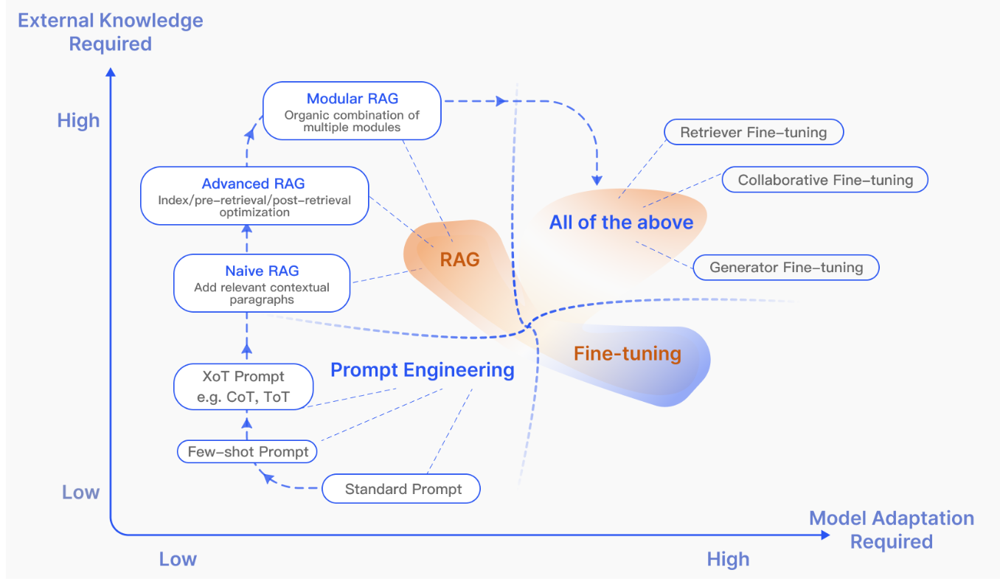
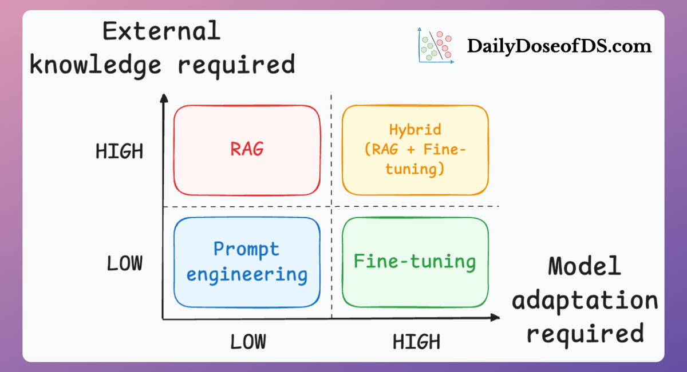
The single most-tested judgment call in Domain 1: given a business need, which GenAI approach do you pick, and in which order do you try them?
Think of it as a ladder with four rungs, ordered from cheapest to most expensive. Rung 1, prompt engineering, means changing the instructions and examples you send the model. No new knowledge, no training: you get a new format, tone, or reasoning style. Rung 2, RAG (Retrieval-Augmented Generation), means the model looks up facts in your documents at answer time and cites them. Rung 3, agents, means the model can take actions: call APIs, query databases, run multi-step tool use. Rung 4, fine-tuning, means retraining parts of the model on your labeled data so a new behavior is baked into its weights. A cousin of rung 4 is distillation: training a small model to copy a big model, so you get near-big quality at small cost on one narrow task.
The rule: start at the bottom and climb only when the cheaper rung cannot satisfy the requirement. Without this discipline, teams jump straight to the most impressive and most expensive option. A team that fine-tunes because "documents change every quarter" will retrain forever, because the training data is stale the day it ships. A team that builds an agent for "answer questions from our policy PDFs" pays for tool-calling complexity it never needed. Each rung exists for a distinct failure of the rung below: prompting cannot inject new knowledge, RAG cannot take actions, agents cannot bake in a permanent behavior cheaply, and fine-tuning cannot stay fresh.
Turn that into a decision tree with two questions. First: does the model need new knowledge it was not trained on, like company policies or product catalogs? If no, stay with prompt engineering. If yes, ask: do answers need to cite sources or stay current as documents change? If yes, RAG. Next: does the task need actions, like checking a live order status, booking a slot, or querying a database? If yes, agents. Next: does the model need a new baked-in behavior, like a consistent brand voice repeated millions of times, or a small cheap model that matches a big model on one narrow task? If yes, fine-tuning or distillation. If none of these are true, you never left the first rung.
The trap is treating fine-tuning as the "serious" answer and RAG as the "prototype" answer. It is backwards: RAG is the production answer for knowledge problems, because retraining on documents that change quarterly means you are always stale. The exam's favorite wrong answer is "fine-tune the model on the company documents" when the scenario says documents update regularly or answers must cite sources. Fine-tuning also cannot cite sources, because the model cannot point at a page it absorbed during training. If the scenario says "cite sources," the answer is RAG, full stop.
Decision flow: which approach?
New behavior needed? (brand voice at scale, narrow-task small model)
YES --> Fine-tune / distill
NO |
v
Actions needed? (call APIs, query DBs, multi-step tool use)
YES --> Agents (Bedrock Agents, action groups, session memory)
NO |
v
New knowledge or citations needed? (docs, policies, current facts)
YES --> RAG (Bedrock Knowledge Bases, RetrieveAndGenerate)
NO |
v
New output format, tone, examples, reasoning style?
YES --> Prompt engineering (system prompt, few-shot, chain-of-thought)
NO --> The base model already does it
Cost order of magnitude (illustrative): prompt engineering costs engineering hours only; RAG adds vector storage plus per-query embedding and retrieval cost. An agent call chains several model calls and tool calls per user question, so it can cost 5 to 20 times a single RAG call. Fine-tuning a model on Bedrock needs labeled data in S3 (hundreds to thousands of examples for useful results) plus a customization job and usually Provisioned Throughput to serve it. The exam does not test exact dollars. It tests the relative order: prompt is cheaper than RAG, which is cheaper than agents, which are cheaper than fine-tuning.
The ladder (climb in order, stop at the cheapest rung that works)
┌─────────────────────────────────────────────────────────────┐
│ RUNG 4: FINE-TUNE new baked-in behavior, brand voice, │ most $$$
│ narrow-task small model │
├─────────────────────────────────────────────────────────────┤
│ RUNG 3: AGENTS actions: call APIs, query DBs, │
│ multi-step tool use, session memory │
├─────────────────────────────────────────────────────────────┤
│ RUNG 2: RAG new knowledge, current facts, │
│ citations, source attribution │
├─────────────────────────────────────────────────────────────┤
│ RUNG 1: PROMPT new format, tone, examples, │ least $$
│ reasoning style. No new knowledge. │
└─────────────────────────────────────────────────────────────┘
Climb only when the rung below cannot satisfy the need.
Figure 1.1: The approach ladder. AWS tests whether you climb in order and stop early. Most scenarios never leave rung 1 or 2.
How to read this diagram
- Start at the bottom rung, prompt engineering: it changes behavior through instructions only, with no new data and no training.
- Climb to RAG only when the model needs knowledge it was not trained on, or answers must cite sources.
- Climb to agents only when the task needs actions (API calls, database queries), not just text.
- Climb to fine-tuning only when a behavior must be baked into the weights permanently and repeated at scale.
- If a component fails the "cheapest rung" test (for example, fine-tuning for documents that change quarterly), the answer is wrong: go back down one rung.
Exam trap. Distractors climb too high ("fine-tune on the documents" for a knowledge question) or too low ("prompt engineering" for a task that needs live API calls). Map each scenario verb to its rung: format/tone is prompt; facts/citations/current is RAG; actions/tools is agents; baked-in behavior at scale is fine-tuning.
How AWS asks this. A 4-6 sentence scenario with a business goal and constraints ("documents updated quarterly", "must cite sources", "same task 10M times a day, cost is the problem"). The right answer is the lowest rung that satisfies every constraint. Distractors each pick the rung above or below.
2. PoC first, the GenAI Lens, and reusable components

How AWS expects you to design before you build: prove it small, check it against the standard lens, and build parts once that every team reuses.
Three design habits. A proof of concept (PoC) is a small throwaway build on Bedrock with on-demand inference that validates feasibility, performance, and business value before any production commitment. The AWS Well-Architected Framework Generative AI Lens is AWS's published checklist for reviewing GenAI workloads across pillars like responsible AI, data, model selection, cost, and security; the exam name-drops it as the standard for "design reviews." Standardized reusable components are the parts you build once and reuse across deployments: prompt templates, model routing layers, guardrail policies, evaluation harnesses.
GenAI projects fail expensively when teams commit to Provisioned Throughput, custom models, or full deployments before knowing the approach works. A PoC on Bedrock costs almost nothing to stand up (on-demand, no infrastructure) and answers the three questions that kill projects: does it work, is it fast enough, is it worth it? The GenAI Lens exists so design reviews are not opinion-based; it gives reviewers a shared checklist. Reusable components exist because every new GenAI feature otherwise reinvents prompt handling, model routing, safety checks, and evaluation, and each reinvention is a new place to fail.
The PoC flow: pick a Bedrock foundation model, run it on-demand (no throughput commitment), wire a minimal RAG or agent loop, measure quality with a small golden dataset, measure latency and token cost, then decide. If the PoC validates, the production design moves through the Lens review: is the data pipeline governed, is model selection justified against cost and latency, are guardrails applied, is there an evaluation gate before each release, is there monitoring? The reusable components that come out of this: a prompt template library (Prompt Management, topic 16), a routing layer that hides model choice behind an internal API (topic 7), a standard guardrail configuration applied to every model call, plus an evaluation harness that every new model version must pass.
A Bedrock PoC can start with zero committed spend: on-demand inference is pay-per-token, and Prompt Management charges nothing extra (you pay only model tokens). A golden dataset for a PoC is typically tens to a few hundred question-answer pairs, enough to spot a failing approach before any throughput commitment. The exam treats "skip the PoC and commit to Provisioned Throughput" as a distractor pattern.
The trap is reading "validate before production" as "write more design documents." The exam means a working PoC on Bedrock with real measurements. Another trap: the GenAI Lens is a review checklist, not a product you deploy; a distractor may say "deploy the GenAI Lens," which is nonsense. A third trap: treating reusable components as optional polish. When a scenario says "five teams building GenAI features" and asks for the most correct architecture, the answer includes shared components (routing layer, guardrail policies, prompt templates), because five bespoke stacks is operational overhead the exam always punishes.
PoC-first design flow
┌──────────┐ ┌──────────────────┐ ┌───────────────────┐
│ Business │ │ PoC on Bedrock │ │ GenAI Lens review │
│ goal + │──▶│ on-demand, small │──▶│ data, model, cost,│──▶ Production
│constraints│ │ golden dataset, │ │ safety, monitoring│ with shared
└──────────┘ │ measure quality, │ │ pillars checked │ components
│ latency, cost │ └───────────────────┘ (prompts,
└──────────────────┘ routing,
▲ fails? stop or guardrails,
│ change approach eval harness)
└──────────────────────┘
Figure 2.1: Validate small on Bedrock before any commitment. The Lens review is the gate between PoC and production.
How to read this diagram
- The business goal and constraints are the input; everything downstream must trace back to them.
- The PoC runs on Bedrock on-demand with a small golden dataset; it measures quality, latency, and cost against the constraints.
- If the PoC fails, you stop or change approach; you never proceed to commitments like Provisioned Throughput.
- The GenAI Lens review checks the design against the standard pillars before production.
- Production ships with shared components (prompt templates, routing layer, guardrail policies, evaluation harness) so the next team reuses them instead of rebuilding.
Exam trap. "Select the model with the best published benchmarks" is never a complete answer: benchmarks ignore cost, latency, regional availability, and compliance constraints. Another favorite: training custom models for multilingual support when Bedrock foundation models already cover the needed languages. And EC2 plus load balancer "high availability" only covers one region; it does not answer a failover-across-regions constraint.
How AWS asks this. Scenario: "12 languages, 99.9 percent availability with automatic failover, switch models without code changes, CTO wants validation before production." The correct chain is: PoC on Bedrock, cross-region inference for failover, Lambda plus API Gateway plus AppConfig for model switching, GenAI Lens alignment. Distractors hardcode endpoints, stay single-region, or skip the PoC.
3. Foundation models on Bedrock
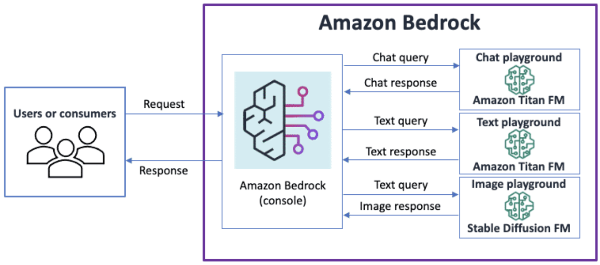
The catalog you are choosing from: what each model family is for, and how you get access to call them.
Amazon Bedrock is the fully managed service that lets you call foundation models (FMs) from many providers through one set of AWS APIs, without managing any servers or GPUs. A foundation model is a large model pre-trained on broad data that you use as-is or adapt; you never train it from scratch. Bedrock hosts models from Amazon (Titan, the first-party family for text, embeddings, and image generation; Nova, the newer Amazon family spanning fast cheap models to flagship models, with multimodal variants). It also hosts Anthropic Claude (strong reasoning and long context, a frequent exam default), Meta Llama (open-weights, good for cost-sensitive and customizable deployments), Mistral AI (efficient European models, strong at multilingual and code tasks), and Cohere (strong at multilingual, search, and embeddings). One API surface, many providers: that is the whole point.
Before Bedrock, using a model meant either calling a third-party API (your data leaves AWS, different auth, different contract per vendor) or self-hosting open models on GPUs (capacity planning, patching, scaling). Bedrock gives you one IAM-controlled, VPC-capable, CloudTrail-logged front door to many models. For the exam, this matters because the "most correct" architecture almost always routes through Bedrock rather than a direct vendor API or a self-hosted endpoint, unless the scenario explicitly needs something Bedrock cannot do.
Bedrock has two API planes. The control plane (bedrock endpoint) manages resources: models, knowledge bases, agents, guardrails, provisioned throughput. The data plane (bedrock-runtime endpoint) runs inference: InvokeModel, Converse, streaming variants. Before you can call a model, you must request model access in the Bedrock console for your account and region; some models also require submitting use-case details. Access is per model, per region, per account, and there is no charge to enable it. Once granted, your IAM principal needs bedrock:InvokeModel (or the Converse equivalent) permission, ideally scoped to specific model ARNs. The request then flows: your code, IAM authorization, the runtime endpoint, the provider's model, and the response back, with usage logged for billing.
Bedrock regions each publish a supported-model list, and availability differs: a model available in us-east-1 may not exist in eu-west-1, which is exactly why cross-region inference profiles exist (topic 6). Context windows are model-specific and measured in tokens; flagship models handle hundreds of thousands of tokens, small fast models handle tens of thousands. The exam tests the principle (bigger context is not always better; you pay per token) more than exact numbers.
The trap is assuming every model is available in every region the moment you need it. The exam loves the scenario "model X is only available in two regions, and the application needs resilience": the answer is a cross-region inference profile, not "deploy in more regions" (you cannot deploy a Bedrock model; AWS hosts it). Another trap: AccessDeniedException on a model call usually means model access was never requested or the model is not available in that region, not that your IAM policy is wrong. Check access first.

How to read this diagram
- The central box is Amazon Bedrock: the managed service you talk to.
- The surrounding boxes are model families from different providers: Amazon Titan and Nova, Anthropic Claude, Meta Llama, Mistral, Cohere.
- Each line is an integration you do not have to build: AWS maintains the provider connection, you just call the model ID.
- What breaks if a link fails: if you have not requested access for a model, or it is not available in your region, calls to that box fail with access errors.
Exam trap. Scenarios that ask for "the best model" with no constraints are testing whether you push back: selection needs cost, latency, context, and regional availability constraints (topic 4). Also watch for "self-host Llama on EC2 for full control" as a distractor when Bedrock already serves Llama as a managed model; the exam prefers managed unless a constraint forces self-hosting.
How AWS asks this. "The team needs Claude for reasoning and Titan Embeddings for search, with one auth model and one audit trail." The answer is Bedrock: request access for both models, scope IAM to the two model ARNs, call both through bedrock-runtime. The distractor is calling each provider's own API directly.
4. Choosing the right model

Model selection is a trade-off across five axes. The exam tests whether you can hold all five in your head at once.
Judge every candidate model on five axes: capability (can it do the task well: reasoning, multilingual, code, vision), cost per token (input and output prices differ), latency (time to first token and tokens per second), context window (how much text fits in one call), and regional availability (is it offered where you run). Smaller models (Claude Haiku, Llama 8B, Nova Lite/Micro class) win on cost and latency; flagship models (Claude Sonnet/Opus class, Nova Pro class) win on complex reasoning. There is no universally best model, only the best fit for the constraints.
Picking on capability alone burns money: a flagship model summarizing support tickets costs many times what a small model costs for the same output quality. Picking on cost alone fails tasks: a tiny model cannot do multi-step reasoning over a 200-page contract. The five-axis trade-off exists because real workloads have hard constraints on at least two axes at once, like "sub-second responses in the EU for a multilingual summarizer," and the exam writes scenarios exactly that way.
Selection is a filtering process. First filter by capability floor: run the task on candidate models with a golden dataset (a fixed set of question-answer pairs used as a quality benchmark) and drop anything below the quality bar. Second filter by regional availability: drop models not offered in your region, or add a cross-region inference profile (topic 6) if the model is worth it. Third, rank survivors by cost and latency: measure tokens per request and time to first token on realistic inputs. Fourth, check context window against your longest realistic input plus expected output; if it does not fit, you need chunking, summarization, or a bigger window. The survivor with the lowest cost that clears every bar wins. Revisit the choice quarterly: model prices and capabilities move.
Selection filters (apply in order):
Candidates ──▶ capability floor? ──▶ region available? ──▶ cost + latency
│ │ NO: drop │ NO: drop or │ rank
│ │ │ cross-region │ survivors
▼ ▼ ▼ profile ▼
golden context window cheapest model
dataset test fits longest input? that clears all bars
How to read this diagram
- Start with candidate models and a golden dataset: anything below the quality bar is dropped first, before cost is considered.
- Check regional availability next: a model you cannot run where you operate is not an option without a cross-region profile.
- Rank the survivors by cost per token and latency on realistic inputs.
- Verify the context window fits your longest realistic input plus expected output; if not, you need chunking or a bigger window.
- The winner is the cheapest model that clears every bar; revisit the choice when models or prices change.
Price ratios are illustrative but the order is stable: a flagship model typically costs roughly 10 to 20 times more per token than the smallest model in the same family. Time to first token on a small model is often under a second; on a flagship model with a long prompt it can be several seconds. The exam will not ask you to quote prices; it will give you relative facts ("Model A costs 15x Model B, the task is simple classification") and expect you to pick the cheaper model or a cascade.
The trap is "bigger is safer," so teams default to the flagship model for everything. The exam punishes this: for classification, extraction, and simple summarization, the small model usually matches the big one on a golden dataset, and the "most correct" answer picks it or routes by complexity. The opposite trap is picking the cheapest model for a reasoning task and hoping prompt engineering closes the gap; measure on a golden dataset instead of hoping.
Exam trap. Watch for "choose the model with the best published benchmarks" as the entire answer: benchmarks ignore your cost, latency, and region constraints. Also watch for picking a model that is not available in the scenario's region without adding cross-region inference. That is a guaranteed distractor kill.
How AWS asks this. "Millions of simple support-ticket classifications per day, plus a weekly complex contract analysis, EU data residency, tight budget." The answer: small model (Haiku/Llama 8B/Nova Lite class) for the daily volume, flagship for the weekly analysis, EU region or EU inference profile, golden dataset to prove the small model is good enough. Distractors use the flagship for everything or ignore the EU constraint.
5. Calling models: InvokeModel vs Converse vs streaming

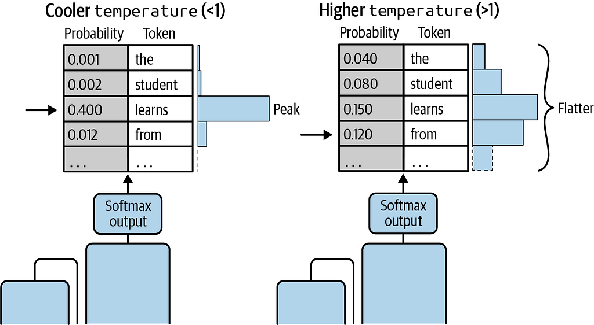
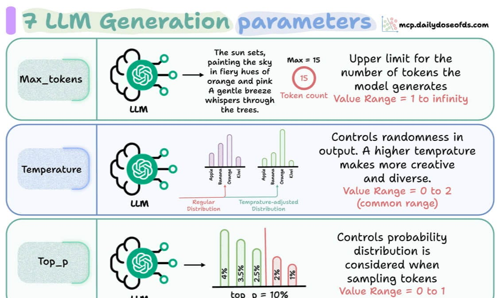
Two APIs do the same job with different trade-offs. Picking the wrong one is a classic exam bug.
InvokeModel is the original Bedrock runtime API: you send a provider-specific JSON body and get the provider-specific response. Each provider has its own body format; for Anthropic Claude you must include anthropic_version: "bedrock-2023-05-31" and max_tokens, or the call fails. Converse is the newer unified API: one request shape (modelId, messages, system, inferenceConfig, toolConfig, guardrailConfig) works across providers, with built-in tool use, inline guardrails, prompt caching hooks (cachePoint), and structured output (outputConfig). Streaming variants (ConverseStream, InvokeModelWithResponseStream) return tokens as they are generated instead of waiting for the full answer. Batch inference is the async option: S3 input, S3 output, hours of latency, roughly half the price.
InvokeModel exists because providers have unique features that a unified API cannot express: embeddings, provider-specific sampling controls, image generation parameters. Converse exists because writing a different request body per provider is operational overhead, and cross-provider features like tool use and guardrails need one contract. Streaming exists because users perceive a chat that starts answering in 300 milliseconds as fast even if the full answer takes 10 seconds; without streaming, every answer waits for the last token. Batch exists for non-interactive work where waiting hours is fine and you want the discount.
A Converse call carries: modelId (the model or inference profile ID), messages (the conversation in roles: user and assistant), system (the system prompt), inferenceConfig (maxTokens, temperature, topP), optional toolConfig (tool definitions for function calling), optional guardrailConfig (guardrail identifier, version, and whether to trace), optional cachePoint (marks where prompt caching applies), and additionalModelRequestFields (the escape hatch for provider-specific parameters). An InvokeModel call carries the raw provider body instead; send the wrong shape and you get ValidationException. Streaming returns an event stream of token chunks; your client reassembles them. Batch inference takes a JSONL file in S3, runs the model over every record, and writes results to S3.
Walkthrough: the code below is the canonical boto3 Converse call the exam expects you to recognize. Read it top to bottom. First you build the runtime client. Then you make one converse() call carrying the model ID, a system prompt, one user message, inference settings, and a guardrail attached inline. Then you read the answer out of the response and check why generation stopped.
import boto3
# WHAT: the Bedrock runtime client. All model invocation APIs live here.
# WHY "bedrock-runtime": the control plane ("bedrock") manages models and KBs.
# The data plane ("bedrock-runtime") runs inference. Wrong client, wrong APIs.
# WHAT BREAKS: the region must be one where the model is enabled. Otherwise you
# get ValidationException or AccessDeniedException, not a model answer.
client = boto3.client("bedrock-runtime", region_name="us-east-1")
# WHAT: one Converse call with a guardrail attached inline.
# WHY each field:
# - modelId: an inference profile ID (us.anthropic.claude-haiku-4-5-...)
# enables cross-region routing. A bare model ID pins you to one region.
# - system: the system prompt, separate from messages. It sets behavior for
# the whole conversation.
# - messages: roles are "user" and "assistant" only. Each content block is a
# dict with "text". Multimodal calls add "image" blocks here.
# - inferenceConfig: maxTokens caps the OUTPUT length, not the input.
# temperature 0 makes output deterministic. Higher values add randomness.
# - guardrailConfig: applies the guardrail to this call. guardrailIdentifier
# is the guardrail ID. guardrailVersion is "DRAFT" or a version number.
# trace="enabled" reports which guardrail policy fired, for debugging.
# WHAT BREAKS: setting both temperature and topP is allowed but they interact.
# The exam expects temperature OR topP, not both. maxTokens too small
# truncates the answer mid-sentence with stopReason "max_tokens".
response = client.converse(
modelId="us.anthropic.claude-haiku-4-5-20251001-v1:0",
system=[{"text": "You are a support assistant. Answer only from the provided context."}],
messages=[{"role": "user", "content": [{"text": "What is the refund window?"}]}],
inferenceConfig={"maxTokens": 500, "temperature": 0},
guardrailConfig={
"guardrailIdentifier": "gr-abc123",
"guardrailVersion": "DRAFT",
"trace": "enabled",
},
)
# WHAT: reading the answer. response["output"]["message"]["content"] is a LIST
# of blocks. Each block has "text" (or "toolUse" for function calling).
# WHY the loop: a response can carry several text blocks. Index [0] only works
# when you know there is exactly one.
# stopReason tells you why generation ended: "end_turn" (done), "max_tokens"
# (truncated, raise maxTokens), "guardrail_intervened" (blocked, check trace).
for block in response["output"]["message"]["content"]:
print(block["text"])
print("stop reason:", response["stopReason"])
The response shape is the exam payload: output.message.content is a list of blocks, and stopReason names why generation ended. guardrail_intervened as a stop reason is the tell that the guardrail blocked the call.
Which API? (the decision matrix)
Need Use
─────────────────────────────────────────────────────────
Same code for Claude, Converse / ConverseStream
Llama, Titan + tool use
Embeddings InvokeModel only (Converse is text-generation only)
Provider-specific InvokeModel (Converse has additionalModelRequestFields
feature as escape hatch, but InvokeModel is the safe answer)
Real-time token ConverseStream / InvokeModelWithResponseStream,
streaming to UI then WebSockets or SSE to the client
Async, hours OK, Batch inference (S3 in, S3 out, ~50% cheaper)
cheapest per token
Guardrails inline Converse guardrailConfig, or standalone ApplyGuardrail
on the call (works with any model, even non-Bedrock)
How to read this diagram
- Read each row as a need-to-answer mapping: find your need in the left column, take the API in the right.
- Note the hard boundary: embeddings are InvokeModel-only; Converse cannot do them under any configuration.
- Note the escape hatch: Converse covers most cross-provider work, with additionalModelRequestFields for provider-specific extras.
- Streaming rows are about perceived latency: tokens appear as generated, though total time is unchanged.
- If a row is misread (for example, batch inference for a chat UI), the latency or capability constraint fails immediately.
Batch inference costs roughly 50 percent less per token than on-demand, in exchange for hours of latency. Streaming cuts perceived latency to the first token (often under a second) while total generation time is unchanged. API Gateway, if placed in front of a GenAI API, has payload and timeout limits (documented, and they change), so long streams usually go through WebSockets or stream directly to the client rather than through a REST API proxy.
The big trap: Converse cannot do embeddings. Embeddings need InvokeModel with the embedding model's provider body. The exam will offer Converse as a distractor for an embeddings task. The second trap: assuming guardrails only work with Converse. The standalone ApplyGuardrail API applies guardrails to any text, including output from non-Bedrock models, which is the answer when the scenario says "we call an external model but need AWS guardrails." The third trap: calling invoke_model with a provider body missing required fields (like Claude's anthropic_version) and debugging IAM for an hour; the error is the request shape, not permissions.
Exam trap. "The application bought Provisioned Throughput but still gets throttled; the code calls invoke_model(modelId='anthropic.claude-...')." The code is calling the base on-demand model, not the provisioned model. The fix is to invoke the provisioned model ARN or identifier. Buying capacity and then not routing to it is one of the exam's favorite bugs.
How AWS asks this. "One codebase must call Claude, Llama, and Titan with tool use and guardrails, and stream answers to a web UI." The answer is Converse plus ConverseStream with toolConfig and guardrailConfig. Distractors use InvokeModel with three hand-rolled request bodies, or put guardrails only on the model instead of the call.
6. Inference routing and pricing: profiles, routers, throughput
Three mechanisms the exam deliberately confuses: inference profiles (availability), prompt routers (cost/quality), Provisioned Throughput (reserved capacity).
Cross-region inference profiles route your request to a model in another region when your region cannot serve it, giving resilience and wider availability. You call the profile ID (with prefixes like us., eu., apac., global.) instead of the bare model ID; for Converse you can pass the profile ARN or ID, for InvokeModel you pass the profile ID. Prompt routers (also called model routers) route each prompt to the cheapest model that can handle its complexity: simple prompts go to a small model, hard ones to the flagship. Provisioned Throughput (PT) is reserved capacity: you commit to model units per hour for 1 to 6 months and get guaranteed throughput and stable latency. On-demand is pay-per-token with no commitment. Batch inference is async and roughly half price. Prompt caching makes repeated input prefixes cheaper.
Each mechanism fixes a different pain. Inference profiles exist because models are not available in every region and a single region can have an outage. Without them, "the model is down" means your application is down. Prompt routers exist because sending every prompt to the flagship model wastes money on easy questions. Provisioned Throughput exists because on-demand has quotas and can throttle you at peak. When you have a steady baseline and a latency promise, you need capacity that is yours. Caching exists because many applications resend the same long system prompt or documents on every call, and paying full price to reprocess identical tokens is waste.
With an inference profile, your request hits the profile endpoint in your region. Bedrock routes it across the AWS backbone (encrypted in transit) to a region hosting the model, and quotas are managed at the source region. With a prompt router, a small classifier or heuristic scores each incoming prompt and picks the target model. The application calls the router ID instead of a model ID. With Provisioned Throughput, you create the commitment with CreateProvisionedModelThroughput, then you must invoke the provisioned model ARN, not the base model ID. The classic bug is buying PT and still calling the base model, which keeps throttling on on-demand quotas. With prompt caching, you mark a cachePoint in the Converse request (or cache_control in InvokeModel). The provider caches the prefix, and cache hits bill at a reduced input-token rate. Caches have a TTL (5 minutes default, up to 1 hour on supported models) and minimum token thresholds per model.
How to read this diagram
- The staircase starts at on-demand: no commitment, highest per-token flexibility, the right default for spiky or experimental traffic.
- Prompt caching is the next step when the same long prefix repeats on every call; it cuts input cost on the repeated part.
- Batch is the step for non-interactive work: hours of latency accepted, roughly half the per-token price.
- Provisioned Throughput is the step for steady baselines with latency promises: you pay hourly for guaranteed capacity.
- The smaller-model step underlies all of them: route easy work to cheap models regardless of pricing mode.
- If a component is misread (for example, treating Provisioned Throughput as a cost saver for spiky traffic), the step fails its purpose: PT guarantees capacity, it does not make bursty traffic cheaper.
Do not confuse these three (the exam's favorite triple):
Mechanism Solves You call
────────────────────────────────────────────────────────────────
Inference profile availability / profile ID like
(cross-region) regional failover us.anthropic.claude-...
Prompt / model router cost vs quality router ID; it picks
per prompt the model per prompt
Provisioned guaranteed capacity the PROVISIONED model
Throughput + stable latency ARN, not the base model
Provisioned Throughput commits run 1 to 6 months and bill per model unit per hour whether you use the capacity or not, which is why spiky traffic on PT wastes money. Batch inference is roughly 50 percent cheaper per token than on-demand. Prompt caching typically needs a minimum prefix length (model-dependent, on the order of a thousand tokens) and the cache TTL is 5 minutes by default with up to 1 hour on supported models; values are documented per model and change, so treat them as current-documented, not exam-memorized.
The triple confusion above is the trap. "Provisioned Throughput" is the answer to "steady baseline, latency guarantee, throttling at peak," never to "spiky traffic, cut costs." "Prompt caching" is the answer to "same long system prompt on every call," never to "guarantee capacity." "Inference profile" is the answer to "model not available in our region" or "need regional failover," never to "route by prompt complexity." A hybrid answer (PT for the predictable baseline, on-demand for peaks) is often the "most correct" option when both patterns appear in one scenario.
Exam trap. Any scenario that says the team "bought Provisioned Throughput but still gets throttled" is testing one bug: the code invokes the base model ID instead of the provisioned model ARN. Increasing model units does not fix routing. Read the code snippet in the scenario before you touch capacity.
How AWS asks this. "2M requests a day baseline plus 10x Friday spikes, sub-3s latency." The most correct answer is hybrid: Provisioned Throughput for the baseline, on-demand for spikes, often with a smaller model for simple queries. "Entirely SageMaker with GPU autoscaling" fails on cost and cold starts; "fixed EC2 for peak" fails on cost.
7. Swapping models without redeploys

Operations wants to switch between Claude, Titan, and Llama without a code deployment. Here is the canonical AWS answer.
The pattern is three services. AWS AppConfig holds the model choice as runtime configuration: a feature flag or config value like active_model = us.anthropic.claude-sonnet-... that you can change in seconds with validation and gradual rollout. AWS Lambda holds the routing logic: it reads the current config and calls the chosen model through the Converse API. API Gateway is the stable front door: one endpoint for clients, with throttling and usage plans, unchanged no matter which model is behind it. Together they let operations switch models, roll back a bad model, or run A/B tests with zero deployments.
Hardcoding a model ID in application code makes every model change a deployment: build, test, deploy, rollback plan. Model changes are frequent (new versions, price changes, a provider outage, a better small model), and deployments are risky and slow. Externalizing the choice to AppConfig turns a deployment into a config change with validation rules and automatic rollback on bad values. The exam treats "no code changes" and "no redeploy" as hard constraints, and only this pattern satisfies them cleanly.
AppConfig stores a configuration document (JSON or YAML) with the active model identifier, plus optional per-route overrides and rollout strategy. The Lambda function fetches the config at startup and polls or receives updates; on each request it reads active_model and calls Converse with that modelId, because Converse works across providers with one request shape. API Gateway fronts the Lambda with a fixed URL, throttling rules, and API keys per client. For resilience, add a circuit breaker: the Lambda (or a Step Functions wrapper) watches for repeated model errors and temporarily routes to a fallback model or a cached response, then probes the primary before switching back. That is graceful degradation: the system gets cheaper or simpler under failure instead of dying.
AppConfig configuration changes propagate in seconds and support validation lambdas plus deployment strategies (all-at-once, linear, canary) with automatic rollback. API Gateway throttling is configured per route and per usage plan, which protects the model endpoint from client bursts. A circuit breaker typically trips after a small number of consecutive failures (illustrative: 5 failures in a minute) and half-opens after a cooldown to probe recovery.
The trap is reaching for the wrong config store. CloudFormation changes are deployments: using a CloudFormation parameter for the model ID violates "no redeploy" because updating it redeploys the stack. EventBridge routes events. It does not hold configuration, so "store the model choice in EventBridge" is nonsense. Environment variables need a redeploy to change on most compute. AppConfig is the exam's favorite "no redeploy" mechanism. When you see those words, think AppConfig.
Client ──▶ API Gateway (stable URL, throttling)
│
▼
Lambda (routing logic)
│ reads
▼
AppConfig: { "active_model": "us.anthropic.claude-...",
"fallback_model": "amazon.nova-lite-..." }
│
▼
Bedrock Converse ──▶ active model
│ on repeated errors: circuit breaker
▼
fallback model or cached response (graceful degradation)
How to read this diagram
- The client only ever sees the API Gateway URL: it never changes, no matter what happens behind it.
- Lambda is the routing brain: it reads the active model from AppConfig on each request and calls it through Converse.
- AppConfig is the control plane for the choice: operations edits a config value, with validation and rollback, and no code deploys.
- Bedrock serves whichever model is active; the circuit breaker watches for repeated errors.
- On failure, traffic degrades to the fallback model or cached responses instead of dying, and the breaker probes the primary before restoring it.
Exam trap. The select-three version of this question lists AppConfig, API Gateway, and Lambda as the correct trio. Distractors swap in CloudFormation ("redeploys"), EventBridge ("routes events, holds no config"), or hardcoded model IDs ("needs a deployment to change"). Also: Step Functions is the answer for orchestration with waits and approvals, not for per-request model routing; Lambda does that.
How AWS asks this. "Operations must switch between Claude, Titan, and Llama without code deployments, and the endpoint URL must never change." Select-three: AppConfig plus API Gateway plus Lambda. A second common framing adds "if the primary model fails, fall back automatically": add the circuit breaker and fallback model to the same pattern.
8. Custom models: fine-tuning, continued pre-training, distillation, imports


When the ladder says "bake it into the weights," these are the Bedrock customization options and what each one is for.
Bedrock custom models adapt a foundation model with your data. Fine-tuning (supervised fine-tuning) trains the model on labeled prompt-and-response pairs in S3 so it learns a behavior: a support tone, a classification task, a response format. Continued pre-training trains further on unlabeled domain text (manuals, papers) so the model absorbs domain knowledge and vocabulary. Distillation trains a small, fast, cheap student model to imitate a large teacher model on your task, so you get near-teacher quality at student cost. Imported models let you bring a model you customized elsewhere (for example, a fine-tuned open model) into Bedrock to serve it through Bedrock APIs. Reinforcement fine-tuning exists for tuning with feedback signals. On the SageMaker side, the same ideas appear as LoRA (Low-Rank Adaptation): a parameter-efficient method that trains only small weight deltas (adapters) instead of all weights, then versions them in the SageMaker Model Registry with deployment pipelines and rollback.
Prompt engineering has limits: a 40-page style guide in the system prompt costs tokens on every call and the model still drifts. When a behavior must be consistent across millions of calls, baking it into the weights is cheaper and more reliable than repeating instructions forever. Distillation exists because the best quality often comes from a big model you cannot afford to run at scale; the student gives you the economics. Continued pre-training exists for domains with heavy jargon (legal, medical, engineering) where the base model simply lacks the vocabulary. Imports exist so work done outside Bedrock is not stranded outside Bedrock.
A Bedrock fine-tuning job reads your training and validation files from S3, runs the training, and produces a custom model with its own model ARN. You then serve it: most custom models need Provisioned Throughput to be invocable (some, like Nova custom models, support on-demand). The lifecycle on SageMaker looks like: prepare labeled data, train with LoRA adapters (small and swappable), register the version in Model Registry, deploy through a pipeline with automated tests and rollback, monitor, and retire-and-replace when a better version lands. Imported models skip training: you upload weights in a supported format, Bedrock validates them, and you get a Bedrock model ARN you can call like any other.
Useful fine-tuning typically starts at hundreds to a few thousand high-quality labeled examples; more is better, but quality beats quantity. Training jobs run for hours; you pay for the compute. Serving a custom model usually requires Provisioned Throughput (hourly commit, 1 to 6 month terms), which is why the economics only work when the behavior repeats at scale. LoRA adapters are a small fraction of the full model size, which makes them cheap to store, version, and swap.
The master trap of the whole domain: fine-tuning for knowledge instead of behavior. "Documents updated quarterly" is RAG. "Must cite sources" is RAG. Fine-tuning bakes knowledge into weights that go stale and cannot cite pages. The exam also tests the serving gotcha: a fine-tuned model that is never given Provisioned Throughput (where required) cannot be invoked at all; "the customization job succeeded but calls fail" points at missing throughput, not bad training data. And distillation is the answer to "same narrow task millions of times, cost is the problem," not "we need new knowledge."
Customization options on Bedrock:
Need Option
──────────────────────────────────────────────────────────────
New behavior from labeled examples Fine-tuning (SFT)
(tone, format, classification)
Domain vocabulary from unlabeled text Continued pre-training
Small cheap model matching a big one Distillation
on one narrow task
Tune with feedback/reward signals Reinforcement fine-tuning
Serve a model customized elsewhere Imported model
Parameter-efficient training, LoRA adapters +
versioned and rolled back SageMaker Model Registry
How to read this diagram
- Each row maps a need to its customization option: match the scenario verb to the left column.
- Behavior from labeled examples is fine-tuning; vocabulary from unlabeled text is continued pre-training; they solve different gaps.
- Distillation is the economics play: teacher quality at student cost for one narrow repeated task.
- Imported models skip training entirely: validate externally trained weights and serve them through Bedrock.
- LoRA plus the Model Registry is the SageMaker-flavored lifecycle: small adapters, versioned, deployed with rollback.
- If a row is misread (for example, fine-tuning for monthly documents), freshness or citation constraints fail.
Exam trap. Any scenario with "updated quarterly/monthly" plus "fine-tune" in an option is testing whether you reject fine-tuning in favor of RAG with a sync schedule. Any scenario with "millions of repetitions, cost is the problem" plus "RAG" in an option is testing whether you pick distillation or prompt caching instead.
How AWS asks this. "Failed fine-tuned deployment must roll back automatically" points to the SageMaker Model Registry plus a deployment pipeline with rollback. "Consistent brand voice across 50M responses a month, currently enforced with a giant system prompt" points to fine-tuning or distillation to cut the per-call token cost. "Model must answer from documents that change monthly" points away from all of these, to RAG.
9. Data pipelines for FMs: validation, processing, extraction
Models are only as good as the data you feed them. This topic is the ingestion machinery: validate, normalize, extract, format.
Data pipelines for FM consumption do four jobs. Validation checks that incoming data is complete and sane before it reaches a model or a knowledge base: AWS Glue Data Quality runs automated data-quality rules and monitoring, SageMaker Data Wrangler gives a visual interface for data preparation, and custom Lambda functions handle validation and normalization logic. Extraction pulls text and structure out of messy files: Bedrock Data Automation (BDA) processes documents, images, video, and audio into structured output using standard output or custom blueprints; Amazon Transcribe converts audio to text. Enhancement enriches text: Amazon Comprehend extracts entities and detects language or PII, Bedrock itself can reformat text, Lambda normalizes fields. Formatting shapes the final input per model: the Converse API's unified messages format versus InvokeModel's provider-specific bodies, plus JSON schemas for structured output.
Raw enterprise data is hostile to models: scanned PDFs, slide decks, meeting recordings, inconsistent field names, missing values. Feeding that raw into a knowledge base produces a RAG system that retrieves garbage and a model that answers from garbage. Validation exists so bad data is caught at the door with alerts instead of silently poisoning answers. Extraction exists because models read text, not pixels or waveforms; someone must turn the PDF and the call recording into text. Formatting exists because each provider's API expects its own body shape, and a malformed body fails before the model ever sees it.
A typical ingestion pipeline: files land in S3 (with versioning, so you can trace which version of a document produced an answer). An S3 event triggers processing: BDA runs async over documents, images, video, and audio and writes structured results back to S3; Transcribe handles long audio with speaker labels; Lambda validates and normalizes the extracted fields; Comprehend adds entities or flags PII; Glue Data Quality monitors the pipeline's outputs with rules and publishes CloudWatch metrics for observability. The cleaned records then feed a knowledge base sync or a fine-tuning dataset. BDA offers standard output (predefined schemas per modality) versus custom blueprints (you define the fields to extract); async jobs write results to S3 when done.
BDA handles four modalities (documents, images, video, audio) in one service and runs asynchronously. Large video files take minutes to process. Knowledge base data sources have documented file size limits (on the order of tens of MB per file; verify current docs at build time). Transcribe supports speaker diarization and custom vocabularies for domain terms. The exam cares about which service does which job, not the exact limits.
Two big traps. First, Bedrock Guardrails do not extract content: Guardrails are safety filters, and the exam offers them as a distractor for extraction tasks. Extraction is BDA, Transcribe, or Comprehend. Second, Amazon Kendra is not a knowledge base: Kendra is enterprise search (it finds documents), while Bedrock Knowledge Bases do RAG (retrieve plus generate with citations). The exam swaps them: "we need generated answers with citations" is Knowledge Bases, not Kendra.

How to read this diagram
- Trace the left edge: raw data sources feed into the ingestion layer; S3 is the durable landing zone.
- Follow the processing stage: extraction and transformation services turn raw files into structured, validated records.
- Note the storage layer in the middle: versioned, queryable stores that downstream GenAI services read from.
- Trace right: consumers (agents, knowledge bases, analytics) read the processed data, never the raw files.
- If a component fails: no versioning means you cannot trace which document version produced an answer; no validation means bad data flows silently into retrieval.
Exam trap. "Ingest 10,000 mixed files a day (PDF, PPT, video) and extract key concepts into structured summaries." The answer chains Bedrock Data Automation (blueprints, standard versus custom output) plus S3 versioning. Distractors use Guardrails for extraction (wrong tool) or Neptune for the extracted text (Neptune is a graph store for GraphRAG relationships, not a document store).
How AWS asks this. Multimodal ingestion scenarios always resolve to BDA for extraction, Lambda for validation and normalization, Glue Data Quality plus CloudWatch for monitoring. If the scenario mentions audio specifically, Transcribe appears in the correct chain. Formatting questions test Converse (unified messages) versus InvokeModel (provider bodies) and JSON schema for structured output.
10. Knowledge Bases: the managed RAG service
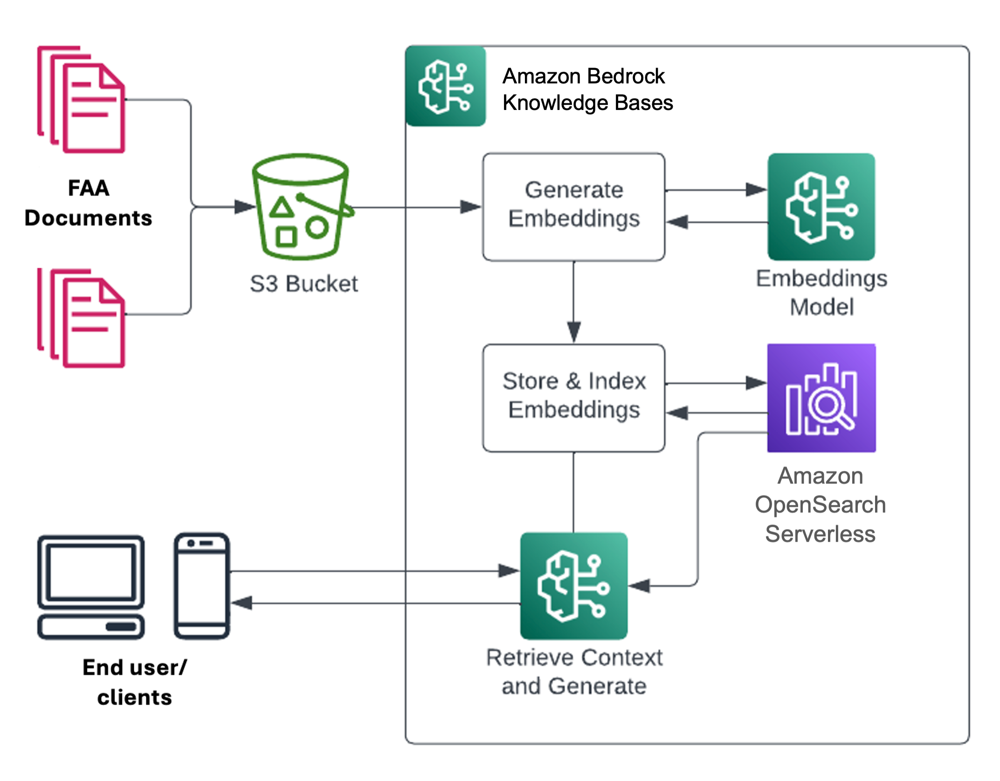
Bedrock Knowledge Bases turn your documents into a queryable RAG backend with almost no code. This is the service behind half the exam's RAG questions.
Amazon Bedrock Knowledge Bases is the fully managed RAG service. You connect data sources: S3 buckets, a web crawler, Confluence, SharePoint, Salesforce. The service ingests the documents, chunks them (topic 13), embeds them (topic 14), and stores the vectors in your chosen vector store (topic 11). You set sync schedules so new and changed documents are picked up automatically. At query time you call Retrieve (get the relevant chunks) or RetrieveAndGenerate (get chunks plus a model-generated answer with source citations) through the bedrock-agent-runtime endpoint. You can also attach a knowledge base to a Bedrock Agent for grounding.
Building RAG by hand means writing the chunker, the embedder, the vector store client, the sync scheduler, the retrieval logic, and the citation plumbing, then operating all of it. Knowledge Bases collapse that into a managed resource: you point at documents and get APIs. For the exam, this is the default answer to any "private documents plus citations" scenario; hand-rolled RAG is a distractor unless the scenario needs something the managed service cannot do (like a custom retrieval algorithm).
Ingestion: each data source has a sync configuration (one-time, scheduled, or on-demand). On sync, the service parses documents (with an optional advanced parsing step for complex layouts and tables), applies the data source's chunking strategy (set at creation; changing it requires recreating the data source), embeds each chunk with the configured embedding model, and upserts vectors plus metadata into the vector store. Retrieval: your query is embedded with the same model, the vector store returns the nearest chunks (optionally with hybrid search and reranking, topic 15), and RetrieveAndGenerate passes those chunks as context to the generation model with an instruction to cite sources. Metadata (S3 object metadata, custom attributes, tags) enables filtered retrieval, for example "only documents tagged region=EU."
The default chunking strategy produces chunks of roughly 300 tokens, which is fine for prototyping and often wrong for production. Chunking is set per data source at creation time. Changing it means recreating the data source and re-ingesting. Sync schedules can be hourly, daily, or custom. "Documents updated quarterly" in a scenario is a direct pointer to configuring a sync schedule rather than doing one-time loads.
The multi-tenant trap: one shared knowledge base for tenants with different access controls is wrong. The exam wants isolation: separate knowledge bases per tenant (or per account) with IAM-scoped access, not one KB plus prompt instructions like "only answer about your own hotel." Prompt-level filtering is not a security boundary. Also: Retrieve versus RetrieveAndGenerate matters; if the scenario needs citations in a generated answer, you need the latter (or you generate yourself from retrieved chunks).

How to read this diagram
- Left column: the supported data source types; each can have its own sync schedule.
- Center: the Knowledge Base, which chunks, embeds, and indexes everything it ingests.
- Right: the vector store holds the embeddings and the retriever serves queries.
- The arrows are one-way for ingestion (documents flow in on sync) and the retriever answers queries against what was ingested.
- If a component fails: no sync schedule means answers go stale as documents change; the wrong chunking strategy at creation means rebuilding the data source to fix retrieval.
Exam trap. "Each hotel needs separate access controls and near-real-time availability data." The answer is one KB per tenant with IAM boundaries plus direct ingestion for the real-time feed. The distractor is a single shared KB with "the model is instructed to respect tenant boundaries." Instructions are not access control.
How AWS asks this. "Documents updated quarterly, answers must cite sources, minimal operational overhead." The chain is: Knowledge Bases with S3 data source, scheduled sync, RetrieveAndGenerate. The exam will offer Kendra (search, not RAG), hand-rolled OpenSearch pipelines (operational overhead), and fine-tuning (stale, no citations) as distractors.
11. Vector stores compared

Knowledge Bases need somewhere to put the vectors. Each store has a personality; the exam tests the match.
A vector store (also called a vector database) stores embeddings and finds the nearest ones to a query embedding fast. Bedrock Knowledge Bases supports several. Amazon OpenSearch Serverless with vector collections is the managed, scalable default. Amazon Aurora PostgreSQL with pgvector stores vectors alongside relational data, so one database holds both your tables and your embeddings. Amazon Neptune is a graph database; with Knowledge Bases it powers GraphRAG, retrieval over entities and relationships, not just text similarity. Amazon S3 Vectors is the low-cost option for smaller-scale vector workloads and dev/test. Third-party options (Pinecone, MongoDB Atlas, Redis) connect through connectors for teams already invested in them.
Different workloads need different trade-offs. A search over 100M product embeddings needs a scaled vector engine (OpenSearch). An application that already lives in Postgres and needs "find similar support tickets for this customer" wants vectors next to its relational rows (Aurora pgvector) rather than a second database to operate. A fraud or knowledge-graph workload needs to traverse relationships ("which suppliers connect to this part through two hops"), which similarity search cannot do (Neptune). A prototype or small workload should not pay for a scaled cluster (S3 Vectors). The exam frames each store by its best fit, and scenarios are written to match exactly one.
All of them do approximate nearest-neighbor search: given a query vector, return the K closest stored vectors by a distance metric (cosine similarity is typical). OpenSearch Serverless manages sharding and scaling for you. You can run multi-index setups per domain for performance isolation. Aurora pgvector adds a vector column and an index type (IVFFlat or HNSW) to Postgres. Queries combine SQL filters ("customer = X") with vector similarity in one statement, which is its superpower. Neptune stores a knowledge graph (entities as nodes, relationships as edges). GraphRAG traverses the graph to gather connected context, then the model reasons over it. S3 Vectors stores vectors as S3 objects with an index, trading query performance for very low cost and zero cluster management.
| Store | Best fit | Exam signal |
|---|---|---|
| OpenSearch Serverless | Large-scale vector search, managed, sharded | "millions of vectors," "managed," "multi-index per domain" |
| Aurora PostgreSQL + pgvector | Relational data plus vectors in one DB | "already on Postgres," "filter by customer then similarity" |
| Neptune | GraphRAG: entities and relationships | "relationships," "multi-hop," "knowledge graph" |
| S3 Vectors | Cost-sensitive, smaller scale, dev/test | "prototype," "low cost," "small scale" |
| Pinecone / MongoDB / Redis | Team already uses them | "existing investment," third-party connector |
Vector store decision flow:
Need vectors next to relational rows? ──YES──▶ Aurora pgvector
NO │
▼
Need multi-hop relationship traversal? ──YES──▶ Neptune (GraphRAG)
NO │
▼
Team already invested in Pinecone / Mongo / Redis? ──YES──▶ third-party connector
NO │
▼
Large scale, fully managed? ──YES──▶ OpenSearch Serverless
NO │
▼
Cost-sensitive prototype or small scale? ──YES──▶ S3 Vectors
Never: ElastiCache (ephemeral) or DynamoDB (not a vector store)
as the durable vector home.
Figure 11.1: Match the workload shape to the store. Each question eliminates all but one answer.
How to read this diagram
- Start at the top question and answer honestly; the first YES picks your store.
- Relational plus vectors in one database is the pgvector signal; relationships and hops are the Neptune signal.
- Existing third-party investments are respected through connectors rather than migrations.
- Scale and budget decide between OpenSearch Serverless and S3 Vectors.
- The bottom line is the trap list: ElastiCache and DynamoDB are never the durable vector home, no matter how plausible they sound.
Embedding dimensions drive storage and cost: Titan Text Embeddings v2 supports 1024, 512, or 256 dimensions (topic 14). Smaller dimensions mean proportionally smaller indexes and faster search at some accuracy cost. OpenSearch Serverless scales compute automatically. Aurora pgvector index choice (HNSW for recall and speed, IVFFlat for build simplicity) is a documented tuning knob. Treat specific scale numbers as illustrative; the exam tests fit, not capacity math.
Three traps. ElastiCache for durable vectors: ElastiCache is a cache. It is ephemeral by design, so vectors live in a real store and ElastiCache holds hot results. DynamoDB as the vector store: DynamoDB is for metadata and session state, not vector similarity search. The exam offers it because "it is fast and serverless," which is true and irrelevant. Neptune for plain document RAG: Neptune earns its place only when the scenario mentions relationships or graph traversal. For plain similarity search it is the expensive wrong answer.
Exam trap. "The application already runs on Aurora PostgreSQL and needs similar-ticket search filtered by customer." The answer is Aurora pgvector: one database, SQL filter plus vector search in one query. Distractors propose a new OpenSearch cluster (extra operational overhead for no reason) or DynamoDB (not a vector store).
How AWS asks this. Scenarios name the workload shape and expect the store: "millions of product embeddings, fully managed" is OpenSearch Serverless; "fraud rings, multi-hop relationships" is Neptune with GraphRAG. "Prototype on a budget" is S3 Vectors. The wrong answers are always a plausible store with the wrong personality.
12. RAG end to end
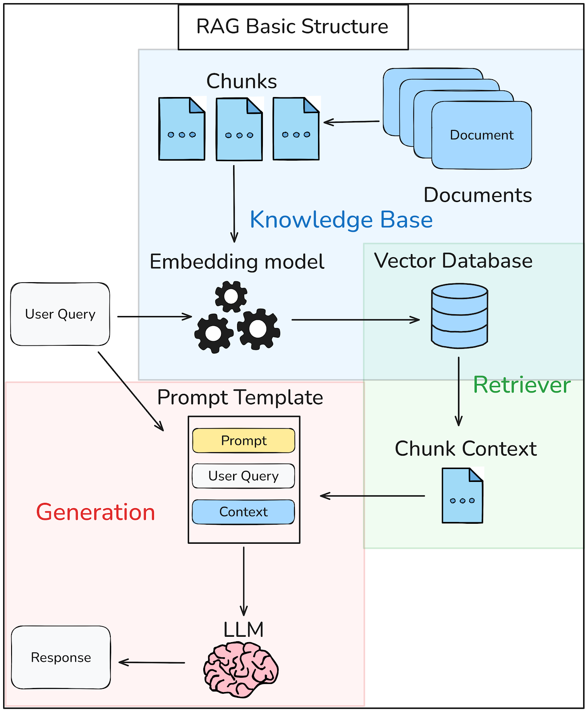

The full retrieval-augmented generation loop, traced from document to cited answer. This is the architecture behind the most questions in Domain 1.
RAG (Retrieval-Augmented Generation) is the pattern where the model does not answer from its training weights alone: at query time, the system retrieves relevant passages from your documents and stuffs them into the prompt as context, then the model answers from that context and cites it. The loop has five stages: ingest (documents in), chunk and embed (split text, turn chunks into vectors), store (vectors plus metadata in a vector store), retrieve (embed the query, find nearest chunks), generate (model answers from the retrieved context with citations). Bedrock Knowledge Bases with RetrieveAndGenerate runs the whole loop managed.
Foundation models have a knowledge cutoff and no access to your private data; they also hallucinate confidently when they do not know something. RAG fixes both without retraining: new documents are searchable the moment they are ingested, and the model is instructed to answer only from the retrieved passages, which it can cite. That is why "documents updated quarterly" and "must cite sources" are RAG signals: fine-tuning cannot do either, and prompt engineering has no new knowledge to work with.
Trace one question, "What is our refund window?", through the loop. Ingest: the returns policy PDF is already synced into the knowledge base. Chunk and embed happened at sync time: the PDF was split into chunks and each chunk became a vector. Retrieve: your question is embedded with the same embedding model; the vector store returns the top-K nearest chunks (say, 5 chunks about refunds and returns). Generate: RetrieveAndGenerate builds a prompt containing your question plus those chunks, with a system instruction like "answer only from the provided sources and cite them"; the model produces "30 days (source: returns-policy.pdf, page 4)." Freshness comes from the sync schedule: changed documents are re-chunked and re-embedded automatically. Metadata filtering narrows retrieval before similarity search ("only policies tagged region=US").
Walkthrough: the code below runs the whole RAG loop managed in one boto3 call. It pairs with the pipeline diagram above. Read it in three steps. Build the agent-runtime client. Call retrieve_and_generate with the question, the knowledge base ID, the answering model, and how many chunks to retrieve. Then print the answer and walk the citations.
import boto3
# WHAT: the client. RetrieveAndGenerate lives on "bedrock-agent-runtime",
# the same client agents use. It is a data-plane API, not control plane.
# WHAT BREAKS: the "bedrock" (control-plane) client has no retrieve_and_generate
# method. Calling it there raises AttributeError before any network call.
client = boto3.client("bedrock-agent-runtime", region_name="us-east-1")
# WHAT: one call that runs retrieve then generate, fully managed.
# WHY each field:
# - input.text: the user question. The KB embeds it with the KB's own
# embedding model, the same one used at ingestion. Mismatched embedding
# models between ingest and query silently wreck retrieval quality.
# - type "KNOWLEDGE_BASE": the managed path. ("EXTERNAL_SOURCES" is the
# bring-your-own-retrieval path.)
# - knowledgeBaseId: which KB to search. Chunking strategy, embeddings, and
# vector store were all fixed when the KB was created. This call just queries.
# - modelArn: the FM that writes the final answer from the retrieved chunks.
# Must be a full ARN, not a bare model ID.
# - numberOfResults: top-K chunks stuffed into the prompt. More chunks mean
# more context tokens, higher cost, slower answers, and diluted relevance.
# WHAT BREAKS: numberOfResults too high floods the prompt with marginal chunks.
# Too low and the answer misses the key passage. 5 is the sane default.
response = client.retrieve_and_generate(
input={"text": "What is the refund window?"},
retrieveAndGenerateConfiguration={
"type": "KNOWLEDGE_BASE",
"knowledgeBaseConfiguration": {
"knowledgeBaseId": "kb-abc123",
"modelArn": "arn:aws:bedrock:us-east-1::foundation-model/anthropic.claude-haiku-4-5-20251001-v1:0",
"retrievalConfiguration": {
"vectorSearchConfiguration": {"numberOfResults": 5}
},
},
},
)
# WHAT: the answer plus its evidence.
# response["output"]["text"] is the final answer string.
# response["citations"] lists every retrieved chunk: the S3 URI it came from
# and the exact text span used. "Must cite sources" in a stem means RAG,
# and citations are the mechanism.
# WHY read citations: they are your grounding proof. An answer with no
# citations usually means the model answered from weights, not your documents.
print(response["output"]["text"])
for citation in response.get("citations", []):
for ref in citation["retrievedReferences"]:
print("-", ref["location"]["s3Location"]["uri"])
How to read this diagram
- Stage 1, Documents: your private files; they enter through a sync schedule, not a training job.
- Stage 2, Embeddings: each chunk becomes a vector; the query will be embedded with the same model.
- Stage 3, Vector Store: the durable index of chunk vectors plus metadata.
- Stage 4, Retriever: embeds your question and returns the nearest chunks (top-K).
- Stage 5, Language Model plus Answer: the model receives question plus chunks and answers with citations.
- If a stage fails: bad chunking (stage 2) splits answers across chunks and retrieval misses; stale sync (stage 1) serves old policy. The model ignoring context (stage 5) is a grounding failure, fixed with instructions and grounding checks, not a bigger model.
A typical RetrieveAndGenerate call retrieves the top 5 to 10 chunks; more chunks mean more context tokens and higher cost per answer, so K is a cost lever. Default chunking is roughly 300 tokens per chunk, so 5 chunks add about 1,500 tokens of context to every answer. End-to-end RAG latency is the sum of embedding time plus vector search plus generation; the generation step dominates.
The trap is debugging RAG failures at the wrong stage. "RAG returns confident but wrong answers, and the retrieved chunks look relevant" is a generation/grounding problem (the model is not using the context), not a retrieval problem; the fix is instructions, grounding checks, or structured output, not a new embedding model. "Retrieved chunks are irrelevant" is a retrieval problem (chunking, embeddings, hybrid search, rerank: topic 15). Switching the generation model when retrieval is broken is the exam's favorite wrong fix.
Exam trap. "Tables in our manuals get split across chunks and answers miss the numbers." The answer is advanced parsing plus hierarchical chunking (topic 13), which keeps table context together. The distractor is "switch to a larger generation model," which changes nothing about how tables were split at ingestion.
How AWS asks this. "Customer support answers must cite the policy document and stay current as policies change monthly." The chain is Knowledge Bases with S3 source, monthly sync schedule, RetrieveAndGenerate. The exam offers fine-tuning (stale, no citations), Kendra alone (search without generation), and a bigger model (does not add knowledge) as distractors.
13. Chunking strategies
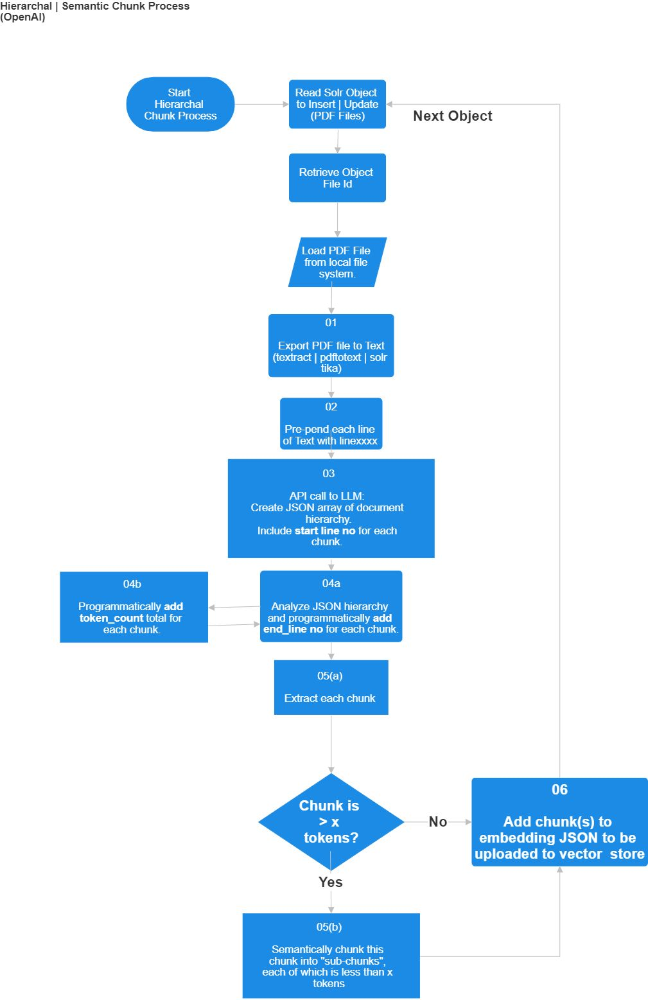
How you cut documents decides what retrieval can find. This is the most technical corner of Domain 1 and a rich source of scenario questions.
Chunking is splitting documents into pieces before embedding, because embedding models take limited input and retrieval works best on focused passages. Bedrock Knowledge Bases offers strategies set per data source at creation time (changing later means recreating the data source). Default chunking splits into roughly 300-token pieces and is meant for prototyping. Fixed-size chunking splits every N tokens with an overlap percentage, which is predictable. Hierarchical chunking creates two levels: small child chunks for precise matching and larger parent chunks that supply surrounding context at generation time. Semantic chunking splits at meaning boundaries (sentences and topics), which gives the best retrieval quality at higher ingestion cost. None means your documents arrive pre-chunked and the service stores them as-is. Custom chunking uses a Lambda function you write for exotic formats.
Chunking is the lever between two failures. Chunks too large dilute the embedding: a 5,000-token chunk about ten topics matches vaguely on all of them and precisely on none. Chunks too small shatter context: the sentence "the window is 30 days" is useless without knowing it refers to refunds, which lived two chunks away. Overlap exists so a sentence split at a boundary still appears whole in a neighbor. Hierarchical chunking exists for structured documents (manuals, legal contracts, docs with headings): match precisely on the child, then hand the model the parent so it sees the section the sentence came from.
At ingestion, the parser walks each document and applies the strategy. Fixed-size: cut every N tokens, keep the last X percent as overlap into the next chunk. Hierarchical: first cut parents (for example, by section or large token windows), then cut children inside each parent and record the parent-child link; at retrieval, the child matches the query, then the parent's text is what gets passed to the model as context. Semantic: the service analyzes sentence and topic boundaries and cuts where meaning shifts, which costs more compute at ingestion because it runs a model over the text. The strategy plus its parameters are stored on the data source; re-ingestion after a strategy change rebuilds every vector, which is why the choice is sticky.

How to read this diagram
- Top row, fixed-size: equal blocks with small overlaps; predictable, cheap, blind to document structure.
- Middle row, hierarchical: small child blocks grouped under larger parent blocks; retrieval matches on the child, generation reads the parent.
- Bottom row, semantic: uneven blocks that follow sentences and topics; best boundaries, most expensive ingestion.
- Compare the failure modes: fixed-size can split a table row across two blocks; hierarchical keeps the section together; semantic keeps the thought together.
- The exam maps document type to strategy: structured manuals and legal text point to hierarchical; FAQs tolerate fixed-size; "best quality regardless of cost" points to semantic.
Strategy picker:
Document type Strategy
─────────────────────────────────────────────────────
Quick prototype, mixed docs default (~300 tokens)
FAQs, short uniform passages fixed-size (+ overlap %)
Manuals, legal, structured docs hierarchical (child match, parent context)
Best quality, cost is secondary semantic (slower, pricier ingestion)
Already split upstream none
Exotic format (CAD, custom XML) custom via Lambda
Default chunking is about 300 tokens per chunk. A common fixed-size setup is 500 to 1,000 tokens with 10 to 20 percent overlap; overlap below 10 percent risks losing boundary sentences, above 20 percent wastes storage on duplicated text. Hierarchical setups often use children of 200 to 400 tokens under parents of 1,000 to 2,000 tokens. Semantic chunking can cost several times more at ingestion than fixed-size because it runs analysis over the text; the exam frames this as "best quality, slower and more expensive ingestion."
The trap is "semantic is always best." It is the best quality, but the exam punishes over-engineering: for FAQs and short uniform docs, fixed-size is fine and cheaper, and the "most correct" answer picks the simpler strategy. The opposite trap is fixed-size for structured documents: splitting a contract's clause across chunks breaks retrieval in ways no embedding model can fix, and the exam's preferred answer for manuals and legal text is hierarchical. Also: chunking is set at data-source creation, so "just change the chunking" is never a quick fix; the scenario expects you to know it requires recreating the data source.
Exam trap. "Retrieval misses answers that span section boundaries in our product manuals." The answer is hierarchical chunking. The distractors are "increase the embedding dimensions" (does not fix split context), "switch the generation model" (retrieval problem, not generation), and "use semantic chunking because it is the best" (plausible, but hierarchical is the exam's preferred answer for structured docs).
How AWS asks this. Scenarios name the document type and the failure symptom, and the strategy follows: tables broken across chunks, answers needing section context, FAQs with simple passages. The wrong answers always fix the wrong stage or over-engineer the strategy.
14. Embeddings: Titan Embeddings and Cohere Embed
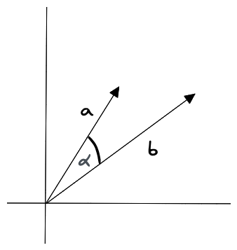
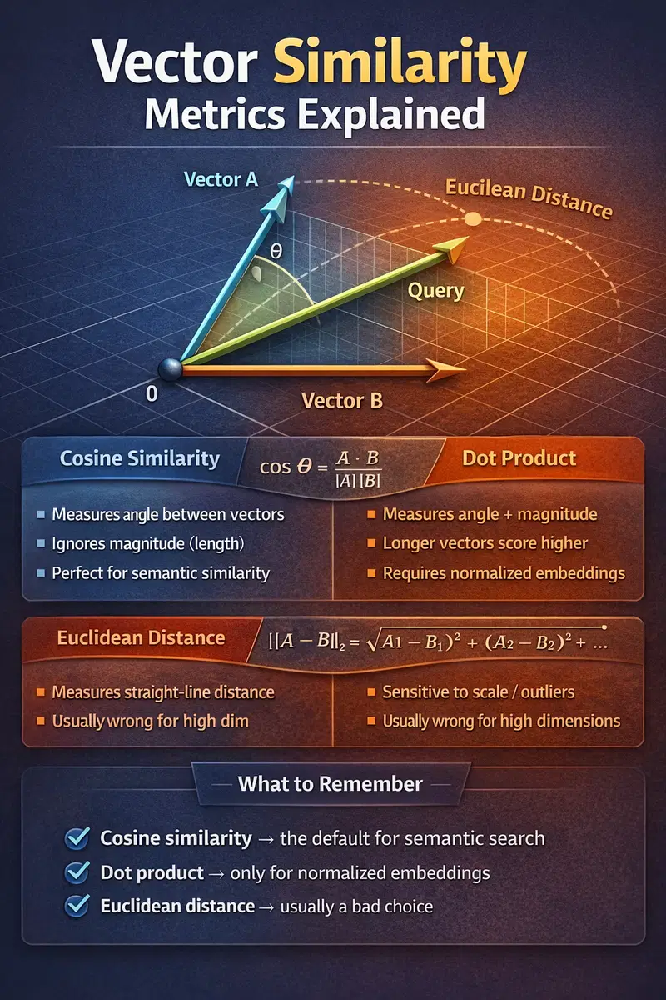
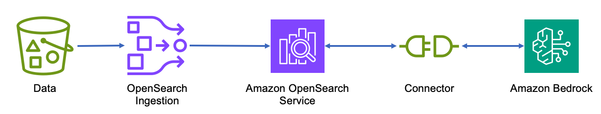
Embeddings turn text into numbers so "similar meaning" becomes "short distance." Two models dominate the exam.
An embedding is a list of numbers (a vector) that represents a piece of text; texts with similar meaning get vectors that sit close together in space. An embedding model does the conversion. On Bedrock, the two exam-relevant choices are Amazon Titan Text Embeddings v2, the cheap default with configurable dimensions (1024, 512, or 256), and Cohere Embed, which is strong for multilingual content and takes an input_type parameter distinguishing search_query from search_document so queries and documents are embedded appropriately. You call embedding models with InvokeModel, never Converse, because Converse is text-generation only. The dimension count is the length of the vector: more dimensions capture more nuance but cost more storage and slower search.
Keyword search cannot match "refund window" to "returns period," because the words differ while the meaning matches. Embeddings exist so retrieval works on meaning: the query and every chunk become vectors, and the nearest vectors win regardless of exact words. The dimension choice exists because it is a direct cost lever: halving dimensions roughly halves vector storage and speeds up search, at some accuracy cost that a golden dataset can measure.
At ingestion, each chunk is sent to the embedding model and the returned vector is stored alongside the chunk text and metadata. At query time, the user's question is embedded with the same model and same dimensions; mixing models or dimensions between ingestion and query silently breaks retrieval because the vector spaces do not align. The vector store computes a distance (cosine similarity is typical) between the query vector and stored vectors and returns the nearest K. Cohere's input_type matters because it embeds queries and documents with different prefixes optimized for each role; using the wrong type degrades match quality. Titan v2's configurable dimensions let you pick 256 for cheap large-scale search or 1024 when nuance matters, without changing models.

How to read this diagram
- Left side: short texts enter the embedding model and come out as points (vectors).
- The plot: each dot is one chunk; distance between dots is meaning distance, not word overlap.
- The dashed circles: clusters of related content; a query about one cluster member retrieves its neighbors.
- The arrows: the same conversion must be applied to the query at search time, with the same model and dimensions.
- If a component fails: mismatched models or dimensions between ingestion and query put the query in the wrong space and retrieval returns nonsense.
Titan Text Embeddings v2 offers 1024, 512, and 256 dimensions; dropping from 1024 to 256 cuts vector storage to a quarter and speeds up search proportionally, with an accuracy trade-off you measure on a golden dataset. Cohere Embed supports 100+ languages, which is why multilingual scenarios point at it. Embedding calls are InvokeModel calls billed per token like any other model input; they are cheap relative to generation, but millions of chunks add up at ingestion.
Three traps. First, calling embeddings through Converse: it cannot do it; embeddings are InvokeModel-only, and the exam offers Converse as the distractor. Second, more dimensions are not automatically better: beyond the point your golden dataset stops improving, extra dimensions are pure cost. Third, changing the embedding model after ingestion means re-embedding everything: the vectors are model-specific, so a model swap is a full re-ingestion, not a config flip.
Exam trap. "Support articles in 12 languages need semantic search." The answer is Cohere Embed for its multilingual strength (or Titan v2 as the cheap default if the scenario stresses cost). The distractor is "use Converse with the embedding model" (impossible) or "increase dimensions to fix irrelevant results" (dimensions tune cost/accuracy; irrelevant results are a chunking or query problem first).
How AWS asks this. Scenarios pair a requirement with the model: multilingual points to Cohere Embed; cost-sensitive large-scale points to Titan v2 at 256 dimensions; "query and document typed differently" points to Cohere's input_type. The API question is always InvokeModel versus Converse, and the answer is always InvokeModel.
15. Retrieval quality: hybrid search, rerank, query handling, debugging
When RAG retrieves the wrong passages, these are the fixes, in the order the exam expects you to try them.
Four quality levers sit between the query and the retrieved chunks. Hybrid search combines vector (meaning) search with keyword (lexical) search, so exact terms like product codes and names are not lost to pure semantic matching. (BM25 is the classic keyword-scoring algorithm behind the lexical side.) Reranking takes the top candidates from the first pass (say, 50 chunks) and runs a dedicated rerank model over them with the query to produce a better-ordered top-K (say, 5); Bedrock offers rerank models for this. Query handling rewrites the user's question before retrieval: query expansion adds synonyms and related terms, query decomposition splits a complex question into sub-questions (often via Lambda), and query transformation (sometimes orchestrated with Step Functions) restates the question for better matching. MCP clients and function-calling interfaces give agents a standardized way to reach these retrieval tools.
Pure vector search has a blind spot: it is great at meaning and bad at exact strings. A query for "invoice INV-2024-8841" needs the literal token, not its vibe. Hybrid search exists to cover both. Reranking exists because first-pass retrieval optimizes for recall (get everything plausible) while generation needs precision (the best 5); a second, more expensive scoring pass on a small candidate set is the economical way to get both. Query handling exists because users write bad queries: vague, multi-part, or phrased nothing like the documents. Decomposition exists because "compare our refund policy to our competitor's" is really two retrievals plus a comparison.
A quality retrieval pipeline: the raw query goes through handling (expansion, decomposition) producing one or more search queries. Each is embedded and run as hybrid search: the vector index returns semantic candidates, the keyword index returns lexical candidates, and the scores are fused (reciprocal rank fusion is a common method). The fused list, typically tens of candidates, goes to the rerank model, which scores each candidate against the original query and returns the final top-K. Those chunks, plus metadata filters applied before or after, become the context for generation. The debug order when answers are wrong: first check retrieval relevance (are the right chunks even retrieved?), then chunking (is the answer split across chunks?), then embeddings (does the model capture the domain nuance?), then grounding (is the model using the context it got?). Fix the earliest failing stage; do not touch the generation model when retrieval is broken.
Retrieval quality pipeline (and debug order):
Query ──▶ handling ──▶ hybrid search ──▶ rerank ──▶ top-K chunks
(expand, (vector + (rerank
decompose, keyword, fused) model)
transform)
Debug order when answers are wrong:
1. Retrieval relevance: are the right chunks retrieved at all?
2. Chunking: is the answer split across chunks? (see ch.13)
3. Embeddings: does the model capture domain nuance? (see ch.14)
4. Grounding: is the model using the retrieved context?
Never fix stage 1-3 problems by changing the generation model.
How to read this diagram
- Top: the quality pipeline flows left to right: handle the query, hybrid-search both signals, rerank to a precise top-K.
- Query handling fixes bad user input before it ever reaches the index: expand vague terms, decompose multi-part questions.
- Hybrid search fuses vector and keyword candidates so neither exact SKUs nor meaning matches are lost.
- Reranking spends the expensive scoring budget on tens of candidates to pick the final few for generation.
- Bottom: the debug order runs the pipeline in reverse priority: retrieval, chunking, embeddings, grounding. Fix the earliest failing stage; never fix stages 1 to 3 by changing the generation model.
A common setup retrieves 50 candidates in the first pass and reranks down to 5 for generation. Reranking 50 short passages costs far less than generating from 50 chunks of context. Hybrid search typically blends both signals rather than picking one. Query decomposition turns one user question into 2 to 4 sub-queries, each a separate retrieval. The cost multiplies, so it is reserved for genuinely multi-part questions.
The master trap, repeated: fixing bad retrieval by switching the generation model. If the chunks are wrong, a smarter model still answers from wrong chunks. If the chunks are right and the answer is wrong, the problem is grounding, and the fix is instructions, grounding checks, or structured output. The second trap: reranking as a substitute for good chunking. Rerank can only order what retrieval found. It cannot reassemble a table that was split across chunks at ingestion.
Exam trap. "RAG returns confident but wrong answers; the retrieved chunks look relevant." Debug chain: retrieval first (chunks look relevant, so retrieval is probably fine), then grounding (the model is not using the context). The answer is grounding fixes: stronger instructions, contextual grounding checks, JSON schema output. Distractors change the embedding model or the generation model.
How AWS asks this. "Queries contain exact product SKUs and retrieval misses them" points to hybrid search. "First-pass retrieval returns 50 plausible chunks but the top 5 are often wrong" points to reranking. "Users ask vague multi-part questions" points to query expansion and decomposition. Each scenario verb maps to one lever.
16. Prompt Management, Prompt Flows, and prompt governance

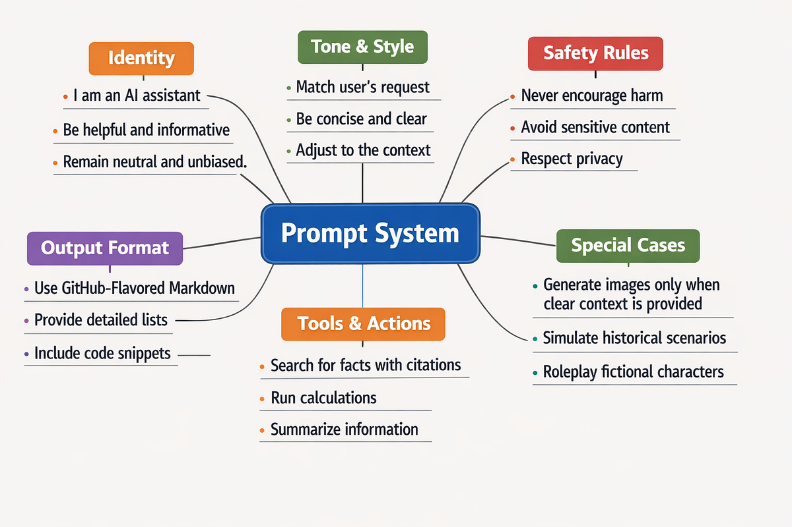
Prompts are production assets. Bedrock gives you versioning, A/B testing, visual chaining, and audit trails for them.
Bedrock Prompt Management treats prompts as managed resources instead of strings buried in code. A prompt has {{variable}} placeholders filled at runtime, versions (immutable snapshots: you edit a draft, then publish a version), and variants (alternative versions of the same prompt for A/B testing). There is no extra charge: you pay only for the model tokens the prompt consumes. Prompt Flows (called Flows) is the visual, no-code builder for multi-step GenAI workflows: nodes for prompts, agents, knowledge bases, Lambda functions, and conditions, with conditional branching and a test panel. Governance wraps both: approval workflows before a prompt version goes live, CloudTrail logging every prompt management API call for audit, CloudWatch Logs for access logging, and S3 as the template repository.
Prompts change constantly: marketing rewrites tone, legal adds disclaimers, a new model version needs different instructions. Hardcoded prompts turn every wording tweak into a code deployment with full regression risk. Managed prompts turn it into publishing a new version with a rollback path. Variants exist because prompt changes are hypotheses: variant A versus variant B on real traffic tells you which wording actually performs. Flows exist because multi-step prompt chains (classify, then extract, then summarize, with a branch on confidence) are painful to wire by hand and worse to debug; a visual builder with a test panel makes the chain inspectable.
A managed prompt stores the template text with {{variables}}, a default model, and inference settings. At runtime your code calls the prompt by name and version, passes variable values, and Bedrock renders the final prompt and runs it. Versions are immutable: version 7 always renders identically, so rollbacks are exact. Variants let you run two versions against live traffic and compare with evaluation metrics. A Flow wires nodes: a prompt node renders a template, a KB node retrieves, a Lambda node transforms, a condition node branches on the output; the test panel runs the flow step by step so you can inspect each node's input and output. Governance: publishing a version can require an approval step; CloudTrail records who created, published, or invoked which prompt version and when; prompt QA uses Lambda to verify outputs and Step Functions to test edge cases, with CloudWatch watching for regressions.
Managed prompt lifecycle:
draft (editable) ──▶ publish ──▶ version 7 (immutable)
│
┌───────────┴───────────┐
▼ ▼
variant A variant B
(50% traffic) (50% traffic)
│ │
└──▶ compare metrics ──▶ promote winner
Prompt Flows: [prompt node] ──▶ [KB node] ──▶ [condition] ─┬─▶ [Lambda] ──▶ output
└─▶ [prompt] ──▶ output
How to read this diagram
- Top: the managed prompt lifecycle. Drafts are editable; publishing freezes an immutable version, so rollback is exact.
- Variants split live traffic between two versions; metrics pick the winner, which is promoted to default.
- Bottom: a Prompt Flow wires nodes in order: prompt, knowledge base retrieval, a condition that branches, then Lambda or prompt nodes producing output.
- The test panel lets you run the flow step by step and inspect each node's input and output.
- If the shapes are confused: a fixed chain with branching is Flows; add human approvals and timeouts and it becomes Step Functions; dynamic tool-using reasoning is agents.
Prompt Management adds no charge beyond model tokens, which makes "it costs extra" a distractor. A/B variants typically split traffic 50/50 until the metrics separate, then the winner is promoted to default. Approval workflows add a human gate measured in hours, so they belong on customer-facing or regulated prompts, not on every internal draft.
Three traps. Variants versus versions: variants are for A/B comparison, versions are immutable releases; the exam swaps the terms. Prompt Flows versus Bedrock Agents: Flows run fixed, deterministic multi-step chains. Agents do dynamic tool-using reasoning. A fixed three-stage chain is Flows (or Step Functions if it needs human approvals and timeouts), never an agent. Hardcoding prompts when the scenario says non-engineers change wording frequently: the answer is always managed prompts with versioning.
Exam trap. "15 prompts across features, marketing keeps changing tone, no redeploys allowed." The answer is Prompt Management with versions and variants. The distractor is Bedrock Agents ("for a fixed prompt chain") or hardcoded strings with a CI pipeline ("still a deployment per wording change").
How AWS asks this. "Three-stage prompt chain with branching on confidence, built by non-engineers" points to Prompt Flows. "Same chain but with a human approval step and timeouts" points to Step Functions. "Prove which marketing prompt variant converts better" points to variants plus evaluation metrics. "Who changed the production prompt last Tuesday" points to CloudTrail.
17. Data privacy and compliance in Bedrock

Keeping data private in transit, at rest, and inside the model's context window. The exam tests the full PII pipeline.
Privacy on Bedrock is layered. VPC endpoints (PrivateLink) for bedrock, bedrock-runtime, bedrock-agent, and bedrock-agent-runtime keep API traffic off the public internet with no NAT gateway needed. IAM policies scope who can invoke which models, knowledge bases, and agents. KMS encrypts data at rest; TLS encrypts it in transit. The PII pipeline is three services: Amazon Macie discovers PII at scale in S3 (it scans buckets and flags sensitive data), Amazon Comprehend detects PII entities in text in real time (30+ entity types like names, SSNs, account numbers), and Bedrock Guardrails sensitive-information filters block or mask PII at inference time. Model invocation logging can route request and response data to S3 or CloudWatch, optionally KMS-encrypted; in compliance-heavy environments you disable or restrict it because logs can contain PII.
GenAI applications are PII funnels: customer messages contain names, account numbers, and health details, and every one of those can end up in a prompt, a log, or a training-adjacent store. Each layer covers a different stage: Macie finds the PII sitting in your lake before it ever reaches a model; Comprehend catches it in live text; Guardrails catch it at the model boundary in both directions; VPC endpoints make sure none of it crosses the public internet; KMS and log controls make sure stored copies are encrypted or absent. Remove any layer and you have a gap the exam will probe.
Trace a customer message: it arrives at your API, and a Lambda calls Comprehend to detect PII entities; flagged spans are masked or the request is rejected before the prompt is built. The prompt goes to Bedrock through a VPC interface endpoint, so packets never leave the AWS network. IAM allows only the application's role to call the specific model ARN. The Converse call carries a guardrailConfig whose sensitive-information filters mask any PII the model might echo in its output. Model invocation logging writes the exchange to an S3 bucket encrypted with a customer-managed KMS key, with a lifecycle policy deleting logs after the retention period; in a healthcare scenario the exam expects you to question whether logging should exist at all. Macie runs separately on a schedule over the S3 buckets, finding PII in documents before they are ingested into knowledge bases.

How to read this diagram
- Find the application layer on the left: user input enters here, which is where pre-filtering (Comprehend PII detection) belongs.
- Follow the call toward Bedrock: the model boundary is where Guardrails apply, on inputs, outputs, or both.
- Note the data plane around it: VPC endpoints, IAM scoping, and KMS encryption form the network and access envelope.
- Find the logging and monitoring outputs: invocation logs, CloudTrail audit entries, and metrics flow to storage with encryption and retention.
- If a layer is missing: no VPC endpoint means traffic crosses the public internet; unencrypted invocation logs mean PII sits in plaintext; no pre-filter means PII reaches the prompt.
Comprehend detects 30+ PII entity types out of the box plus custom entity recognition. Macie scans S3 at bucket scale and reports findings to Security Hub. S3 Lifecycle policies can expire invocation logs after a defined retention window (illustrative: 90 days for support forensics, shorter under strict regimes). VPC interface endpoints remove the need for NAT gateways for Bedrock traffic, which is both a security and a cost point.
Three traps. Amazon Translate for PII obfuscation: translation preserves meaning, so it protects nothing. The exam offers it because "the text looks different," which is not protection. Amazon Rekognition for text PII: Rekognition is a vision service. Comprehend is the text answer. Logging invocations to CloudWatch without encryption in a healthcare or finance scenario: the exam wants KMS encryption or disabled logging, because the logs contain the very PII you are protecting.
Exam trap. "Protect PII in customer-service GenAI conversations with minimal custom work." The select-three answer is Macie plus Comprehend plus Guardrails. Distractors swap in Translate ("preserves meaning"), Rekognition ("vision, not text"), or a hand-rolled regex Lambda ("custom work" when managed services exist).
How AWS asks this. "Keep Bedrock traffic off the public internet" is always VPC interface endpoints. "Discover PII across 500 S3 buckets" is Macie. "Detect and mask SSNs in live chat before the model sees them" is Comprehend plus Guardrails sensitive-information filters. "Regulator asks who accessed what" is CloudTrail, not CloudWatch Logs.
18. Model evaluation basics

How you prove a model is good enough before it serves users. The exam's evaluation matrix, in the Domain 1 framing.
Model evaluation is measuring a model's outputs against expected quality before and after deployment. Bedrock Evaluations offers three methods. Programmatic (automatic) evaluation uses built-in or custom datasets with computed metrics like accuracy, stability, and toxicity; it is objective and repeatable. LLM-as-a-judge uses a model to grade another model's outputs on metrics like correctness, completeness, faithfulness (did it hallucinate?), harmfulness, refusal quality, and style or tone, with custom metrics definable; it gives human-like judgment at scale. Human evaluation uses your own employees or an AWS-managed team for subjective judgment: relevance, style, brand voice. Bring-your-own-inference lets you evaluate any model or full application response, even outside Bedrock. RAG evaluation specifically measures retrieval relevance plus generation faithfulness, powered by LLM-as-a-judge.
"The demo looked good" is not a release criterion. Models regress on prompt changes, new model versions behave differently, and RAG systems rot as documents change. Evaluation exists to make quality a gate: no prompt version, model swap, or KB re-ingestion ships until it passes. Programmatic eval exists for cheap repeatable benchmarks; LLM-as-a-judge exists because human review does not scale to thousands of comparisons; human eval exists because some judgments (brand voice, taste) are irreducibly subjective.
An evaluation job takes a dataset of prompts (with reference answers where the metric needs them), runs them through the model under test, and scores the outputs. Programmatic: compare outputs to references with string or classifier metrics. LLM-as-a-judge: a judge model receives the prompt, the output, and a rubric, and returns scores per metric; for RAG eval it also receives the retrieved chunks and scores faithfulness (is every claim supported by the chunks?) separately from retrieval relevance (were the right chunks retrieved?). Human: raters follow your guidelines and score subjective dimensions. The quality gates around this: continuous evaluation on a schedule, regression testing on every prompt or model change, canary testing (new version serves a slice of traffic), and golden datasets for hallucination detection (fixed question-answer pairs that must keep passing).
| Method | Metrics | Use when |
|---|---|---|
| Programmatic | Accuracy, stability, toxicity | Objective, repeatable benchmarks |
| LLM-as-a-judge | Correctness, completeness, faithfulness, harmfulness, refusal, style/tone; custom metrics | Human-like quality at scale; RAG eval; agent eval |
| Human | Relevance, style, brand voice, any custom metric | Subjective judgment; own team or AWS-managed team |
| Bring-your-own-inference | Any of the above | Evaluating non-Bedrock models or full app responses |
Evaluation method picker:
Judging something subjective (voice, taste, relevance)?
YES ──▶ Human eval (own team or AWS-managed team)
NO │
▼
Need human-like judgment at scale (10k+ outputs)?
YES ──▶ LLM-as-a-judge (correctness, faithfulness, style, custom metrics)
NO │
▼
Objective, repeatable benchmark (accuracy, toxicity)?
YES ──▶ Programmatic evaluation (built-in or custom datasets)
Model or app lives outside Bedrock? ──▶ Bring-your-own-inference
wraps any of the above around your own inference.
Gates around all of it: golden datasets, regression on every
prompt/model change, canary rollouts.
Figure 18.1: Pick the cheapest method that can judge what you need judged. Subjectivity decides.
How to read this diagram
- The first question is subjectivity: anything about voice, taste, or relevance needs humans.
- Scale is the second question: thousands of comparisons need LLM-as-a-judge; small objective checks use programmatic metrics.
- Bring-your-own-inference is orthogonal: it lets any of the three methods score non-Bedrock models or full application responses.
- The bottom row is the gating discipline: golden datasets plus regression plus canary, applied no matter which method you picked.
- If a method is misread (for example, programmatic eval for brand voice), the metric cannot measure what the scenario asks about.
Golden datasets for regression typically hold tens to a few hundred pairs: enough to catch regressions, cheap enough to run on every change. LLM-as-a-judge costs a judge-model call per graded output, so grading 10,000 outputs costs 10,000 judge calls. That is still far cheaper than human rating at scale. Canary deployments commonly start at 1 to 5 percent of traffic before full rollout.
Two traps. Programmatic evaluation for style or brand voice: those are subjective, so the answer is human eval or LLM-as-a-judge, not string matching. Human evaluation as the only gate at scale: humans are the most expensive and slowest option, so the exam wants automated gates (programmatic plus LLM-as-a-judge) with human spot-checks, not "have the team read 10,000 outputs."
Exam trap. "Compare two models for summarization quality including brand voice, at scale, before launch." The answer is LLM-as-a-judge for scale plus human evaluation for brand voice. Distractors use programmatic eval alone ("cannot judge voice") or human eval alone ("does not scale"). "Validate a new prompt version before rollout" is regression testing plus canary.
How AWS asks this. "Prove the RAG system does not hallucinate" points to RAG evaluation: retrieval relevance plus generation faithfulness, LLM-as-a-judge powered. "Detect quality drift in production with minimal custom work" points to scheduled Bedrock evaluation jobs plus CloudWatch anomaly detection on token metrics, not a hand-built Glue and Athena pipeline.
Exam drill: questions per topic
Every topic gets six questions: easy, medium, and hard, in both multiple-choice (one answer) and multiple-response (select all that apply) formats. Answers are hidden until you open them. Each explanation covers why the right answer is right and why every distractor is wrong.
Topic 1: The approach ladder
Easy Multiple choice Picking the rung for new knowledge
A company wants a chatbot that answers questions from its employee handbook, which is updated every quarter. Answers must include the page number of the source. Which approach is MOST appropriate?
- Prompt engineering with a detailed system prompt
- RAG with a Bedrock Knowledge Base and RetrieveAndGenerate
- Fine-tune a foundation model on the handbook
- Build a Bedrock Agent with action groups for each handbook chapter
Correct: B. The scenario needs new knowledge (the handbook), current facts (quarterly updates), and citations (page numbers). RAG retrieves at query time, stays fresh through sync, and RetrieveAndGenerate produces citations.
A is wrong: prompt engineering cannot inject knowledge the model was not trained on.
C is wrong: fine-tuning goes stale between quarterly updates and cannot cite page numbers.
D is wrong: agents are for actions and tool use; nothing here needs actions, so it adds cost and complexity for no benefit.
Easy Multiple response Two correct rungs
A startup needs two things: (1) all support replies written in a consistent friendly brand voice, and (2) answers grounded in a product manual that changes monthly. Which TWO approaches together form the MOST correct design? (Select TWO.)
- Prompt engineering for the brand voice
- Fine-tuning for the monthly product manual
- RAG for the product manual
- Prompt engineering or fine-tuning for the brand voice, depending on scale
- A Bedrock Agent to read the manual
Correct: C and D. The manual changes monthly and needs grounding, which is RAG (C). The brand voice is a behavior: prompt engineering works at small scale, and fine-tuning is justified if the volume makes per-call instruction cost exceed training cost (D).
A is wrong: prompt engineering alone is fine for voice, but as a standalone answer it ignores the manual entirely; D is the more complete correct choice.
B is wrong: fine-tuning on a monthly-changing manual means perpetual retraining and no citations.
E is wrong: nothing requires actions; an agent adds orchestration overhead for a retrieval task.
Medium Multiple choice The repetition economics trap
A company classifies 8 million customer messages per month into 12 categories. It currently uses a flagship model with a long few-shot system prompt. The CFO demands lower cost without accuracy loss. Which is the MOST correct next step?
- Switch to RAG so the model can cite the category definitions
- Distill the task into a smaller fine-tuned model served on Provisioned Throughput
- Add a Bedrock Agent to double-check each classification
- Move the few-shot examples to Prompt Management variants
Correct: B. This is a narrow, repeated task at massive scale: the ladder says bake the behavior into a smaller cheaper model (distillation/fine-tuning) and serve the predictable baseline on Provisioned Throughput. The long system prompt's per-call token cost is the waste being eliminated.
A is wrong: classification needs no external knowledge or citations; RAG adds retrieval cost to every call for zero benefit.
C is wrong: an agent multiplies cost per message (several model calls plus tools) instead of cutting it.
D is wrong: Prompt Management improves prompt governance but does not change the per-token economics of 8M flagship calls.
Medium Multiple response Climbing too high
An architect proposes fine-tuning a model on the company's policy documents, which are updated twice a year, so the helpdesk bot "knows" them. Which TWO statements correctly identify the flaws in this proposal? (Select TWO.)
- Fine-tuning cannot produce source citations for its answers
- The model will go stale between retraining cycles
- Fine-tuning is technically impossible on policy documents
- RAG would be cheaper and stay current via sync schedules
- Prompt engineering alone would solve the knowledge problem
Correct: A and B. Fine-tuned knowledge cannot cite sources (A) and decays as documents change between retraining runs (B). These are the two fundamental reasons knowledge problems belong on the RAG rung.
C is wrong: fine-tuning on documents is technically possible; it is just the wrong tool here.
D is wrong: while true in spirit, the question asks for the flaws in the proposal, and D is a counter-proposal, not a flaw. (On the real exam, read exactly what the stem asks for.)
E is wrong: prompt engineering cannot inject knowledge the model lacks.
Hard Multiple choice Multi-constraint ladder design
A bank needs a loan assistant that: (1) answers from a 2,000-page policy manual updated monthly with page citations, (2) checks live application status via an internal API, (3) keeps conversation context across a 20-minute session, and (4) minimizes cost. Which design is MOST correct?
- Fine-tune a model on the manual, then add prompt instructions to call the status API
- RAG over the manual for citations plus a Bedrock Agent with an action group for the status API and session memory
- A single large system prompt containing the manual summary plus the API documentation
- Two separate chatbots: one RAG bot for policy, one agent for status, with no shared session
Correct: B. Each constraint maps to a rung: monthly manual plus citations is RAG; live API lookups are agent actions; cross-turn context is agent session memory. One system satisfies all four constraints. Cost is minimized by using RAG (no retraining) and scoping the agent to the status task.
A is wrong: fine-tuning goes stale monthly and cannot cite pages; prompt instructions cannot reliably call APIs.
C is wrong: a 2,000-page manual does not fit in a prompt, and prompts cannot call live APIs.
D is wrong: splitting the session breaks constraint 3 (shared 20-minute context) and doubles the user experience cost.
Hard Multiple response Ladder violations in a proposal (Select TWO)
A startup handling 200 support tickets a month proposes: "We will fine-tune a model on our tickets for brand tone, fine-tune a second model on the product catalog so answers cite sources, use RAG for nothing, and use an agent to file warranty claims via our API." Which TWO parts violate the approach ladder? (Select TWO.)
- Fine-tuning for brand tone at 200 tickets a month
- Fine-tuning on the catalog for citable answers
- Using an agent to file warranty claims via API
- Prompt engineering for the welcome message format
- Skipping RAG entirely
Correct: A and B. At 200 tickets a month, prompt engineering achieves the tone with no training cost, so fine-tuning for tone (A) climbs the ladder without justification. Fine-tuning on the catalog for citations (B) is doubly wrong: fine-tuned knowledge cannot cite sources and goes stale, which is exactly the RAG rung.
C is wrong: filing warranty claims via API is a genuine action need, which is the agent rung regardless of volume.
D is wrong: message format is the textbook rung-1 task.
E is wrong: skipping RAG is a consequence of the violations in A and B, not itself a separate ladder violation; the violations are the two fine-tuning choices.
Topic 2: PoC first, GenAI Lens, reusable components
Easy Multiple choice What the PoC proves
A CTO wants validation before committing to Provisioned Throughput for a new support chatbot. What should the team build FIRST?
- A production deployment with Provisioned Throughput and full monitoring
- A PoC on Bedrock using on-demand inference, measuring quality, latency, and cost against a small golden dataset
- A detailed benchmark comparison of all published model leaderboards
- A custom model fine-tuned on support tickets
Correct: B. The PoC validates feasibility, performance, and business value with minimal spend before any throughput commitment. On-demand inference means no capacity commitment while measuring.
A is wrong: it commits to the expensive production shape before knowing the approach works.
C is wrong: published benchmarks ignore the company's cost, latency, and data constraints.
D is wrong: fine-tuning is a heavy commitment and the wrong rung for an unvalidated idea.
Easy Multiple response Reusable components (Select THREE)
Five teams are building GenAI features. Which THREE are examples of standardized reusable components the platform team should build once? (Select THREE.)
- A shared prompt template library with versioning
- A central model routing layer hiding model choice behind an internal API
- A separate AWS account per team with no shared services
- Five different guardrail configurations, one per team's preference
- A standard guardrail policy applied to every model call
Correct: A, B, and E. Prompt templates (A), a model routing layer (B), and a standard guardrail policy (E) are the canonical build-once components: every team reuses them instead of reinventing prompt handling, model selection, and safety.
C is wrong: isolated accounts with no shared services are the opposite of reuse; they multiply operational overhead.
D is wrong: five divergent guardrail configs are the opposite of standardization; the point is one policy, consistently applied.
Medium Multiple choice GenAI Lens in a design review
During a design review for a GenAI workload, the reviewer asks for alignment with the Well-Architected Framework Generative AI Lens. What is the reviewer asking for?
- Deployment of a new AWS service called GenAI Lens
- A checklist-based review of the design against GenAI pillars: responsible AI, data, model selection, cost, security
- A benchmark run comparing the chosen model against competitors
- Approval from the AWS account team before going live
Correct: B. The GenAI Lens is a published review checklist (a "lens" of the Well-Architected Framework), not a deployable product. It standardizes design reviews across responsible AI, data, model selection, cost, and security pillars.
A is wrong: there is no such service to deploy; "deploy the Lens" is a nonsense distractor.
C is wrong: benchmarks are one input to model selection, not the Lens review.
D is wrong: the Lens is a self-service review framework, not an AWS approval gate.
Medium Multiple response PoC measurements (Select TWO)
A PoC for a document Q&A system is complete. Which TWO measurements must it produce before the team commits to production? (Select TWO.)
- Answer quality scored against a golden dataset
- Latency and token cost per query at expected prompt sizes
- The exact number of training epochs for the base model
- A signed contract with the model provider
- Confirmation that the approach is technically feasible at all
Correct: A and B. The PoC must prove quality (A) and that latency and cost fit the constraints (B). These are the measurements that de-risk the production commitment.
C is wrong: base-model training details are out of scope for the target candidate and irrelevant to the PoC.
D is wrong: Bedrock is pay-as-you-go; no provider contract is needed.
E is wrong: feasibility alone is not enough; an approach can be feasible but too slow or too expensive, which is why A and B are the required pair.
Hard Multiple choice The 12-language scenario
A company is launching a support assistant in 12 languages with 99.9% availability including automatic failover, must be able to switch models without code changes, and the CTO wants validation before production. Which combination is MOST correct?
- Train a custom multilingual model on EC2 with an ALB for high availability; hardcode the model endpoint; skip the PoC to save time
- PoC on Bedrock; cross-region inference profiles for failover; Lambda + API Gateway + AppConfig for model switching; GenAI Lens review before production
- Pick the model with the best multilingual benchmark; deploy single-region; store the model ID in a CloudFormation parameter
- Use one EC2 fleet per language with 12 separate models and DNS failover
Correct: B. Each constraint maps to one decision: PoC for validation, cross-region inference for regional failover, AppConfig plus Lambda plus API Gateway for no-redeploy switching, GenAI Lens for the review gate. Bedrock FMs already cover the languages, so no custom training is needed.
A is wrong: custom training for languages Bedrock already covers; ALB is single-region so no real failover; skipping the PoC violates the CTO's explicit constraint.
C is wrong: benchmarks ignore cost/latency/region constraints; single region has no failover; CloudFormation changes are deployments.
D is wrong: twelve self-hosted models is maximum operational overhead for a problem Bedrock solves managed.
Hard Multiple response Design review failures (Select TWO)
A design review rejects a GenAI proposal. Which TWO findings would justify the rejection under the GenAI Lens? (Select TWO.)
- The team skipped the PoC and committed to a 6-month Provisioned Throughput contract
- Each of four teams built its own prompt handling, routing, and safety checks with no shared components
- The team chose a Bedrock managed model instead of self-hosting on EC2
- The team ran the PoC on Bedrock on-demand before committing
- The team documented data lineage from S3 sources to generated answers
Correct: A and B. Committing to throughput before validation (A) violates PoC-first design and the cost pillar; four bespoke stacks (B) violate the reusable-components principle and multiply operational overhead.
C is wrong: choosing managed over self-hosted is the exam's preferred direction, not a rejection reason.
D is wrong: PoC on on-demand is exactly the right behavior.
E is wrong: documented lineage is a governance strength, not a failure.
Topic 3: Foundation models on Bedrock
Easy Multiple choice Why Bedrock instead of direct APIs
A team needs Claude for reasoning and Titan Embeddings for search, with one authentication model and one audit trail. What is the MOST correct approach?
- Call Anthropic's API directly for Claude and Bedrock for Titan Embeddings
- Request model access for both models on Bedrock and call both through bedrock-runtime with IAM-scoped permissions
- Self-host both models on EC2 GPU instances
- Use Amazon Kendra for both reasoning and embeddings
Correct: B. Bedrock is the single front door: one IAM auth model, one audit trail via CloudTrail, no servers to manage. Requesting access per model per region is the required setup step.
A is wrong: two auth models and two contracts; data leaves AWS for the direct call.
C is wrong: maximum operational overhead when managed models already exist on Bedrock.
D is wrong: Kendra is enterprise search, not a model hosting service.
Easy Multiple response Before the first call (Select TWO)
A developer's Bedrock model call fails with AccessDeniedException. Which TWO are the most likely causes to check FIRST? (Select TWO.)
- Model access was never requested for that model in that region
- The model is not available in the caller's region
- The VPC endpoint is missing, blocking all traffic
- The prompt exceeds the model's context window
- The embedding dimensions are mismatched
Correct: A and B. AccessDeniedException on Bedrock most commonly means the account never requested access for that model (A) or the model is not offered in that region (B). These are control-plane prerequisites, not IAM bugs.
C is wrong: a missing VPC endpoint causes network failures, not AccessDeniedException.
D is wrong: an oversized prompt raises a validation error, not an access error.
E is wrong: dimension mismatch breaks retrieval silently; it does not produce access errors.
Medium Multiple choice Model only in two regions
A team in eu-west-1 needs a model that is only available in us-east-1 and us-west-2. The application must survive a regional outage. What is the MOST correct solution?
- Deploy the model to eu-west-1 using Bedrock custom model import
- Call a cross-region inference profile so requests route to the available regions with automatic failover
- Run the model on EC2 in eu-west-1 for full control
- Cache all model responses in ElastiCache so the region never needs the model
Correct: B. Cross-region inference profiles exist exactly for this: the model is not in your region, and you need resilience. You call the profile ID and Bedrock routes across regions on the AWS backbone.
A is wrong: you cannot deploy a Bedrock-hosted third-party model to a new region; imports are for models you customized elsewhere.
C is wrong: self-hosting a proprietary model you do not have weights for is impossible, and operational overhead is maximal.
D is wrong: caching cannot serve queries that were never asked before; it is not a substitute for model availability.
Medium Multiple response Bedrock planes (Select TWO)
Which TWO statements about Bedrock API planes are correct? (Select TWO.)
- The control plane (bedrock endpoint) manages resources like knowledge bases, agents, and provisioned throughput
- The data plane (bedrock-runtime endpoint) runs inference: InvokeModel, Converse, and streaming
- Model access requests are submitted through the data plane
- VPC endpoints are only available for the control plane
- Both planes share a single endpoint and IAM action
Correct: A and B. The control plane manages resources (A) and the data plane serves inference (B). This split is why IAM policies and VPC endpoints name each plane separately.
C is wrong: model access is requested in the console (control-plane concept), not via inference calls.
D is wrong: VPC interface endpoints exist for bedrock, bedrock-runtime, bedrock-agent, and bedrock-agent-runtime.
E is wrong: the planes have distinct endpoints and distinct IAM actions (for example, bedrock:InvokeModel is data plane).
Hard Multiple choice Least-privilege model access
A platform team gives 20 product teams Bedrock access. Each team may only use its two approved models, and all calls must be auditable per team. What is the MOST correct design?
- One shared IAM role with bedrock:* permissions and a wiki page listing approved models
- Per-team IAM roles scoped to the two approved model ARNs, with CloudTrail logging all Bedrock API calls
- One API key per team embedded in application code
- A single Bedrock Agent that all teams share for every use case
Correct: B. Least privilege means each team's role can invoke only its approved model ARNs; CloudTrail gives the per-team audit trail. This satisfies both constraints with managed services.
A is wrong: a wiki page is not an enforcement boundary; bedrock:* lets any team call any model.
C is wrong: Bedrock uses IAM, not API keys in code; hardcoded credentials are a security failure.
D is wrong: one shared agent cannot serve 20 teams' distinct use cases and breaks per-team scoping.
Hard Multiple response Nova vs Titan vs Claude vs Llama (Select TWO)
A workload needs: low-latency classification of 5M short messages a day, EU region, tight budget. A second workload needs: complex multi-step reasoning over long legal documents, quality is the priority. Which TWO model choices are MOST correct? (Select TWO.)
- A small fast model (Haiku, Llama 8B, or Nova Lite class) for the classification workload
- A flagship reasoning model (Sonnet/Opus or Nova Pro class) for the legal workload
- The flagship model for both workloads to keep the architecture simple
- The smallest model for both workloads to minimize cost
- A custom-trained model for each workload
Correct: A and B. The classification workload is high-volume and simple: a small model clears the quality bar at a fraction of the cost (A). The legal workload is complex reasoning where quality dominates: the flagship model is justified (B). Different constraints, different models.
C is wrong: "architectural simplicity" does not justify 10-20x token cost on 5M simple calls a day.
D is wrong: the small model will fail the complex legal reasoning quality bar; cost-first selection breaks the quality constraint.
E is wrong: custom training for both is maximum cost and time when managed models already fit each workload.
Topic 4: Choosing the right model
Easy Multiple choice The five axes
When selecting a foundation model, which set of factors must be weighed together?
- Capability, cost per token, latency, context window, regional availability
- Parameter count, training data size, release date, vendor market share
- Benchmark scores only; the highest score always wins
- Which model the team used in the last project
Correct: A. These five axes are the selection criteria: can it do the task, what does it cost, how fast is it, does the input fit, is it available where you run.
B is wrong: parameter counts and training details are not the decision factors; task fit and operating constraints are.
C is wrong: benchmarks ignore cost, latency, context, and regional constraints.
D is wrong: familiarity is not a selection criterion.
Easy Multiple response Small model wins (Select TWO)
A golden-dataset test shows a small model matches the flagship on a ticket-classification task. Which TWO follow? (Select TWO.)
- The small model is the more cost-effective choice for this task
- The small model will also match the flagship on complex reasoning tasks
- Latency will likely improve with the small model
- The flagship model should still be used for safety
- Benchmarks prove the small model is universally better
Correct: A and C. Equal quality at lower token cost (A) and typically faster time to first token (C) make the small model the right pick for this task.
B is wrong: results on classification do not transfer to complex reasoning; each task needs its own test.
D is wrong: "bigger is safer" is the trap; safety comes from guardrails and evaluation, not model size.
E is wrong: one task result proves nothing universal.
Medium Multiple choice Context window vs cost
An application sends 150,000-token documents to a flagship model on every call, but only the first 2,000 tokens are ever relevant. What is the MOST correct optimization?
- Switch to a model with an even larger context window
- Pre-extract the relevant 2,000 tokens (or use RAG retrieval) so each call carries only what the task needs
- Increase Provisioned Throughput to handle the large prompts
- Enable prompt caching and keep sending the full document
Correct: B. Paying flagship prices for 148,000 useless tokens per call is the waste; retrieving or extracting only the relevant slice attacks the actual cost driver.
A is wrong: a larger window makes the waste worse, not better.
C is wrong: Provisioned Throughput guarantees capacity; it does not reduce per-token waste.
D is wrong: caching discounts repeated tokens but the 148,000 irrelevant tokens still cost on first use and add latency; the correct fix is to stop sending them.
Medium Multiple response Selection filters in order (Select TWO)
Which TWO statements describe the correct model-selection filter order? (Select TWO.)
- Test capability on a golden dataset before optimizing for cost
- Check regional availability before committing to a model
- Always pick the cheapest model first, then test if it works
- Choose by benchmark leaderboard, then check the region
- Context window only matters for chat applications
Correct: A and B. Capability floor first (A): a cheap model that fails the task is not an option. Regional availability (B) is a hard filter before any commitment.
C is wrong: cost-first selection picks models that fail the quality bar; capability is the first filter.
D is wrong: benchmarks ignore operating constraints; they are an input, not the decision.
E is wrong: context window matters for any task with long inputs: documents, code, transcripts.
Hard Multiple choice Cascade design
A support bot handles 1M queries a day: 90% are simple FAQs, 10% need complex reasoning. Budget is tight but the hard 10% must be excellent. What is the MOST correct architecture?
- Flagship model for all queries to guarantee quality
- Small model for all queries to minimize cost
- Model cascade: a classifier or prompt router sends simple queries to a small model and escalates complex ones to the flagship
- Fine-tune the flagship model on the FAQs
Correct: C. The cascade matches cost to complexity: 90% of traffic gets cheap-model pricing, 10% gets flagship quality. This is the price-to-performance optimum the exam rewards.
A is wrong: flagship pricing on 900K simple queries a day is the budget failure.
B is wrong: the small model fails the "hard 10% must be excellent" constraint.
D is wrong: fine-tuning the flagship does not change its per-token price; the cost problem remains.
Hard Multiple response Revisit triggers (Select TWO)
A model choice was finalized six months ago. Which TWO events should trigger a re-evaluation of the selection? (Select TWO.)
- A new model version launches with better price-to-performance
- The workload's region expands to a new geography
- The team hires a new developer
- The model passes the same golden dataset again
- Token costs drop 30% with no other changes
Correct: A and B. A better price-to-performance option (A) can obsolete the current pick; a new geography (B) changes the regional-availability filter and possibly the multilingual requirement.
C is wrong: team changes do not alter the technical trade-off.
D is wrong: passing the same dataset confirms the status quo; it is not a trigger to change.
E is wrong: a price drop on the current model strengthens the current choice; it does not trigger re-evaluation (though it is good news).
Topic 5: Calling models: InvokeModel vs Converse
Easy Multiple choice One codebase, three providers
An application must call Claude, Llama, and Titan with tool use, using one request format. Which API is MOST correct?
- InvokeModel with a hand-written body per provider
- Converse, with toolConfig for tool use
- Batch inference
- ApplyGuardrail
Correct: B. Converse is the unified API: one request shape across providers, with built-in tool use via toolConfig. It eliminates the per-provider body maintenance.
A is wrong: three hand-rolled bodies are exactly the operational overhead Converse removes.
C is wrong: batch inference is async S3-based processing, not an interactive multi-provider API.
D is wrong: ApplyGuardrail applies safety filters; it does not invoke models.
Easy Multiple response Embeddings API facts (Select TWO)
Which TWO statements about embeddings APIs are correct? (Select TWO.)
- Embedding models are called with InvokeModel
- Converse can generate embeddings with the right toolConfig
- Converse is text-generation only and cannot do embeddings
- Batch inference is the standard way to get embeddings
- ApplyGuardrail returns embeddings as a side effect
Correct: A and C. Embeddings go through InvokeModel with the embedding model's provider body (A); Converse is text-generation only (C). This is the exam's favorite API trap.
B is wrong: no toolConfig makes Converse return embeddings.
D is wrong: batch inference is for async generation jobs, not the embeddings API.
E is wrong: ApplyGuardrail filters text; it returns no embeddings.
Medium Multiple choice The ValidationException
A developer calls InvokeModel for Claude but omits anthropic_version from the body and gets ValidationException. What is the MOST correct fix?
- Add the missing anthropic_version and max_tokens fields to the provider-specific body
- Switch the IAM policy to bedrock:*
- Request model access again in a different region
- Enable prompt caching on the request
Correct: A. InvokeModel bodies are provider-specific; Claude requires anthropic_version and max_tokens. The error is the request shape, not permissions.
B is wrong: widening IAM does not fix a malformed body.
C is wrong: the model is reachable; the body is wrong.
D is wrong: caching is unrelated to body validation.
Medium Multiple response Streaming to a web UI (Select TWO)
A chat UI must show tokens as they are generated. Which TWO form the MOST correct design? (Select TWO.)
- ConverseStream on the backend for incremental token delivery
- WebSockets or server-sent events from backend to browser
- Standard InvokeModel with a 30-second client polling loop
- Batch inference with S3 event notifications
- API Gateway REST proxy with default timeouts for the full stream
Correct: A and B. ConverseStream produces the token stream (A); WebSockets or SSE carry it to the browser incrementally (B). Together they give sub-second perceived latency.
C is wrong: polling a non-streaming call cannot show partial tokens and adds latency.
D is wrong: batch inference takes hours; it is not interactive.
E is wrong: API Gateway REST has payload and timeout limits that break long streams; streaming needs a streaming transport.
Hard Multiple choice Guardrails on an external model
A company calls a third-party model outside Bedrock but must apply AWS guardrail policies to its inputs and outputs. What is the MOST correct approach?
- Pass guardrailConfig in a Converse call to the external model
- Use the standalone ApplyGuardrail API on the inputs and outputs around the external call
- It is impossible; guardrails only work with Bedrock models
- Rebuild the guardrail policies as prompt instructions
Correct: B. ApplyGuardrail is standalone and model-agnostic: it filters any text, including traffic to and from non-Bedrock models. This is the exact scenario it exists for.
A is wrong: Converse only calls Bedrock models; guardrailConfig cannot reach an external model.
C is wrong: directly contradicted by the ApplyGuardrail API's purpose.
D is wrong: prompt instructions are not an enforcement boundary and cannot replicate filter policies.
Hard Multiple response Provisioned throughput bug (Select TWO)
An app bought Provisioned Throughput but still gets throttled at peak. Code review shows invoke_model(modelId='anthropic.claude-3-5-sonnet-...'). Which TWO statements are true? (Select TWO.)
- The code invokes the base on-demand model, bypassing the provisioned capacity
- The fix is to invoke the provisioned model ARN or identifier
- The fix is to buy more provisioned model units
- Switching to Converse would automatically use the provisioned capacity
- The throttling proves Provisioned Throughput does not work
Correct: A and B. The base model ID routes to on-demand quotas (A); only the provisioned model ARN consumes the reserved capacity, so routing is the fix (B).
C is wrong: more capacity does not help when the code never routes to it; this is the exam's classic capacity-vs-routing trap.
D is wrong: Converse with the base model ID has the same routing problem; the identifier is what matters, not the API.
E is wrong: the feature works; the integration is wrong.
Topic 6: Inference routing and pricing
Easy Multiple choice The triple: availability
A model is unavailable in the application's region and the app needs automatic failover. Which mechanism is MOST correct?
- Provisioned Throughput
- A prompt router
- A cross-region inference profile
- Prompt caching
Correct: C. Inference profiles route across regions for availability and failover; you call the profile ID (us., eu., apac., global. prefixes).
A is wrong: Provisioned Throughput reserves capacity; it does not create cross-region availability.
B is wrong: prompt routers pick models by prompt complexity (cost/quality), not by region.
D is wrong: caching cuts repeated-input cost; it does not add regions.
Easy Multiple response Cost levers for repeated prefixes (Select TWO)
Every call resends the same 8,000-token system prompt. Which TWO reduce cost with the LEAST operational overhead? (Select TWO.)
- Prompt caching with a cachePoint on the static prefix
- Provisioned Throughput for the workload
- Fine-tuning the prompt into the model
- Shortening the system prompt to the essentials (prompt compression)
- Switching to batch inference for the interactive chat
Correct: A and D. Caching discounts the repeated prefix with a one-line request change (A); compression removes tokens that were never needed (D). Both are low-overhead and stack.
B is wrong: Provisioned Throughput is a latency/capacity guarantee, not a repeated-input cost fix.
C is wrong: fine-tuning to memorize a system prompt is heavyweight over-engineering for a caching problem.
E is wrong: batch inference is hours-latency async; it cannot serve interactive chat.
Medium Multiple choice Steady baseline plus spikes
An application has a steady baseline of 2M requests a day plus 10x spikes on Fridays, with a sub-3-second latency promise. What is the MOST correct capacity design?
- Provisioned Throughput sized for the 10x peak
- On-demand only, accepting throttling risk
- Provisioned Throughput for the baseline plus on-demand for spikes
- Batch inference for all traffic
Correct: C. The hybrid matches each pricing mode to its strength: PT guarantees the predictable baseline's latency, on-demand absorbs the unpredictable spikes without paying for idle peak capacity.
A is wrong: sizing PT for the peak means paying for idle capacity six days a week.
B is wrong: on-demand alone risks throttling exactly when the latency promise matters most.
D is wrong: batch inference takes hours; it cannot meet sub-3-second latency.
Medium Multiple response Prompt router vs inference profile (Select TWO)
Which TWO statements correctly distinguish prompt routers from inference profiles? (Select TWO.)
- Prompt routers optimize cost vs quality per prompt; inference profiles optimize availability across regions
- Inference profiles are called via geographic-prefixed IDs like us.anthropic.claude-...
- Both reserve hourly capacity for guaranteed throughput
- Prompt routers require Provisioned Throughput to function
- They are two names for the same feature
Correct: A and B. Different problems (A): per-prompt cost/quality routing versus regional availability routing. Different identifiers (B): router IDs versus geographic profile prefixes.
C is wrong: neither reserves capacity; that is Provisioned Throughput's job.
D is wrong: prompt routers work with on-demand models; no PT required.
E is wrong: they are distinct mechanisms the exam deliberately contrasts.
Hard Multiple choice The throttling post-mortem
After buying Provisioned Throughput, an app still throttles at peak. Metrics show provisioned utilization near zero while on-demand throttles climb. What is the MOST likely root cause?
- Provisioned Throughput was purchased in the wrong region
- The application invokes the base model ID instead of the provisioned model ARN
- The model does not support Provisioned Throughput
- Prompt caching is disabled
Correct: B. Zero provisioned utilization plus on-demand throttling is the signature of the routing bug: capacity was bought but the code never addresses it. The fix is invoking the provisioned model identifier.
A is wrong: PT is regional, but a region mismatch would show as an error or different metrics, not zero utilization alongside on-demand throttling.
C is wrong: if the model did not support PT, the purchase itself would have failed.
D is wrong: caching affects cost, not which capacity pool serves the request.
Hard Multiple response Multi-lever cost program (Select THREE)
Token costs are growing 30% a month. The CFO wants cuts without UX degradation. Which THREE levers form the MOST correct program? (Select THREE.)
- Route simple queries to smaller models via a prompt router or cascade
- Enable prompt caching for repeated system prompts and documents
- Compress prompts and cap response lengths
- Buy Provisioned Throughput sized for the spikiest hour
- Switch all traffic to batch inference
Correct: A, B, and C. Tiered models (A) cut cost per query by complexity; caching (B) cuts repeated-input cost. Compression and response caps (C) cut tokens per call. All three preserve UX while attacking different cost drivers.
D is wrong: PT sized for the spikiest hour wastes money on idle capacity; PT is for steady baselines, and this scenario is about cost, not latency guarantees.
E is wrong: batch inference cannot serve interactive traffic; "all traffic" breaks the UX constraint.
Topic 7: Swapping models without redeploys
Easy Multiple choice The no-redeploy trio
Operations must switch between Claude, Titan, and Llama without code deployments, and the client-facing URL must never change. Which combination is MOST correct?
- CloudFormation parameters + EC2 + ALB
- AppConfig + Lambda + API Gateway
- EventBridge + Step Functions + S3
- Hardcoded model IDs with a CI/CD pipeline
Correct: B. AppConfig holds the model choice as runtime config (no redeploy), Lambda routes per request, API Gateway keeps the URL stable. This is the exam's canonical trio.
A is wrong: CloudFormation updates are deployments, violating the no-redeploy constraint.
C is wrong: EventBridge routes events but holds no configuration; S3 is not a config service here.
D is wrong: hardcoded IDs plus CI/CD means every switch is a deployment.
Easy Multiple response Why AppConfig (Select TWO)
Which TWO are true of using AppConfig for model selection? (Select TWO.)
- Configuration changes apply without redeploying code
- It supports validation rules and gradual rollouts with rollback
- It routes inference requests between regions
- It reserves model capacity per hour
- It replaces the need for IAM policies
Correct: A and B. AppConfig externalizes the model choice so changes are config, not deployments (A), with safety rails: validation, deployment strategies, and automatic rollback (B).
C is wrong: cross-region routing is the inference profile's job.
D is wrong: capacity reservation is Provisioned Throughput.
E is wrong: IAM still governs who can call what; AppConfig changes nothing about auth.
Medium Multiple choice Graceful degradation
A chat application must stay up when its primary flagship model errors repeatedly. What is the MOST correct resilience design?
- Retry the primary model indefinitely with exponential backoff
- A circuit breaker that trips after repeated failures and routes to a fallback smaller model or cached responses, probing the primary before restoring it
- Buy more Provisioned Throughput for the primary model
- Show users a static error page until the provider recovers
Correct: B. The circuit breaker stops hammering a failing model, degrades gracefully to a cheaper fallback, and half-opens to detect recovery. This is graceful degradation: simpler under failure instead of dead.
A is wrong: indefinite retries amplify load on an already failing model and never restore service.
C is wrong: capacity does not fix a failing model; the errors are not throttling.
D is wrong: a static error page is the opposite of graceful degradation.
Medium Multiple response Config store impostors (Select TWO)
A scenario demands runtime model switching with no redeploy. Which TWO options FAIL that constraint? (Select TWO.)
- Storing the model ID in a CloudFormation parameter
- Storing the model choice in EventBridge rules
- Storing the model choice in AppConfig
- Storing the model ID in Systems Manager Parameter Store, fetched by Lambda at request time
- Using Converse so one code path serves all providers
Correct: A and B. CloudFormation changes redeploy the stack (A); EventBridge routes events and holds no configuration (B). Both fail the no-redeploy constraint.
C is wrong: AppConfig is the correct config store, not a failure.
D is wrong: Parameter Store fetched at runtime changes without a redeploy, so it satisfies the constraint.
E is wrong: Converse is the correct unified API, not a failure.
Hard Multiple choice A/B testing models in production
A team wants to A/B test two models on live traffic, shifting 10% of traffic to the challenger with instant rollback. What is the MOST correct design?
- Deploy two full stacks and use DNS weighting
- AppConfig with a percentage-based rollout of the challenger model ID, Lambda routing via Converse, API Gateway as the stable endpoint
- Two CloudFormation stacks toggled manually
- Hardcode a random split in application code and redeploy to adjust
Correct: B. AppConfig natively supports percentage rollouts with validation and instant rollback; Lambda plus Converse keeps one code path; API Gateway keeps the URL stable. Every requirement is met with managed services.
A is wrong: two full stacks double operational overhead for a config-level change.
C is wrong: manual stack toggles are deployments, slow and risky.
D is wrong: hardcoded splits need redeploys to adjust, violating the instant-adjust requirement.
Hard Multiple response Full switching design (Select THREE)
Design review: "switch models without code changes, survive provider outages, keep one client URL." Which THREE complete the design? (Select THREE.)
- AppConfig for the active model identifier with change validation
- API Gateway as the single stable client endpoint
- Lambda routing logic reading AppConfig and calling Converse, with a circuit breaker to a fallback model
- A second hardcoded application for the fallback model
- Manually editing the Lambda code for each model switch
Correct: A, B, and C. AppConfig externalizes the choice with safe rollout (A); API Gateway keeps the URL stable (B); Lambda plus Converse routes per request with a circuit breaker for provider-outage survival (C).
D is wrong: a hardcoded fallback app is a second deployment to maintain and cannot switch at runtime; the circuit breaker in C already covers the fallback.
E is wrong: manual code edits are deployments, violating the no-code-changes requirement; that is what AppConfig exists to avoid.
Topic 8: Custom models: fine-tuning and more
Easy Multiple choice When to fine-tune
A company sends 50M messages a month through a flagship model with a 6,000-token style-guide system prompt to enforce brand voice. What is the MOST correct long-term fix?
- Fine-tune or distill a smaller model that bakes in the brand voice, cutting per-call prompt tokens
- Add more examples to the system prompt
- Switch to RAG for the style guide
- Enable prompt caching and change nothing else
Correct: A. A consistent behavior repeated 50M times a month is the textbook fine-tuning/distillation case: bake the voice into the weights and stop paying 6,000 tokens per call to re-teach it.
B is wrong: more prompt tokens make the per-call cost worse.
C is wrong: RAG retrieves knowledge; brand voice is a behavior, not a retrievable fact.
D is wrong: caching helps but the 6,000 tokens still cost on first use and the economics remain flagship-scale; the structural fix is the smaller baked-in model.
Easy Multiple response Customization options (Select TWO)
Which TWO correctly match a need to a Bedrock customization option? (Select TWO.)
- Consistent behavior from labeled examples: fine-tuning (SFT)
- Small cheap model matching a big one on a narrow task: distillation
- Documents updated monthly with citations: fine-tuning
- New knowledge from unlabeled domain text: prompt engineering
- Serving a model trained elsewhere: prompt engineering
Correct: A and B. Fine-tuning learns behavior from labeled pairs (A); distillation compresses a teacher's skill into a cheap student for one narrow task (B).
C is wrong: monthly documents with citations are RAG, not fine-tuning.
D is wrong: unlabeled domain text is continued pre-training, not prompt engineering.
E is wrong: serving an externally trained model is the imported-model option, not prompt engineering.
Medium Multiple choice The uninvocable custom model
A Bedrock fine-tuning job completes successfully, but all invocations of the custom model fail. What is the MOST likely cause?
- The training data was too small
- No Provisioned Throughput was purchased for the custom model, which most custom models require to be invocable
- The base model was deprecated
- The S3 training bucket was deleted after the job
Correct: B. Most Bedrock custom models need Provisioned Throughput to be served; a successful training job with failing invocations is the signature of missing throughput, not bad data.
A is wrong: small data hurts quality; it does not make invocations fail.
C is wrong: the job just completed on that base model, so it is not deprecated.
D is wrong: the trained model artifact is independent of the training bucket after the job.
Medium Multiple response SageMaker lifecycle (Select TWO)
A team fine-tunes on SageMaker AI with LoRA adapters. Which TWO are correct lifecycle practices? (Select TWO.)
- Version adapters in the SageMaker Model Registry
- Deploy through a pipeline with automated tests and rollback
- Train all model weights from scratch for each version
- Keep every deployed version running forever for safety
- Skip evaluation because LoRA is parameter-efficient
Correct: A and B. The registry versions each adapter (A); the pipeline gates deployment with tests and can roll back a bad version (B). This is the retire-and-replace lifecycle.
C is wrong: LoRA's point is training small adapters, not full weights; from-scratch training wastes the efficiency.
D is wrong: versions are retired and replaced; running everything forever is cost without benefit.
E is wrong: efficiency does not exempt a version from evaluation.
Hard Multiple choice Continued pre-training vs fine-tuning
A law firm's model misunderstands Latin legal maxims and archaic contract vocabulary, but its behavior and tone are already correct. The firm has 10GB of unlabeled historical contracts. What is the MOST correct customization?
- Supervised fine-tuning on labeled Q&A pairs
- Continued pre-training on the unlabeled contracts
- RAG over the contracts
- Distillation into a smaller model
Correct: B. The gap is domain vocabulary from unlabeled text, which is exactly continued pre-training. Behavior is already right, so SFT on Q&A pairs targets the wrong gap.
A is wrong: SFT teaches behavior from labeled pairs; the behavior is already correct.
C is wrong: RAG retrieves passages but does not teach the model the vocabulary; the model would still misunderstand what it retrieves.
D is wrong: distillation compresses existing capability; it cannot add vocabulary the teacher lacks.
Hard Multiple response Rollback requirement (Select TWO)
"A failed fine-tuned deployment must roll back automatically with zero data loss." Which TWO complete the design? (Select TWO.)
- SageMaker Model Registry for versioning each trained version
- A deployment pipeline with automated tests and automatic rollback to the previous version
- Deleting the previous version immediately after deployment
- Manual approval by email before any rollback
- Training a new version from scratch on every deployment
Correct: A and B. Versioning (A) keeps the known-good version addressable; the pipeline (B) detects failure and rolls back automatically. Together they satisfy the requirement.
C is wrong: deleting the previous version destroys the rollback target.
D is wrong: email approval is manual and slow; the requirement says automatic.
E is wrong: retraining from scratch per deployment is wasteful and unrelated to rollback.
Topic 9: Data pipelines for FMs
Easy Multiple choice Extracting from mixed files
A pipeline ingests 10,000 files a day: PDFs, slide decks, and training videos. It must extract key concepts into structured summaries. Which service is MOST correct for the extraction step?
- Bedrock Guardrails
- Bedrock Data Automation with custom blueprints
- Amazon Neptune
- AWS CloudTrail
Correct: B. Bedrock Data Automation handles documents, images, video, and audio in one service, with standard or blueprint-defined structured output. It is built for exactly this multimodal extraction.
A is wrong: Guardrails filter content for safety; they do not extract anything.
C is wrong: Neptune is a graph database, not an extraction service.
D is wrong: CloudTrail logs API calls; it processes no data.
Easy Multiple response Pipeline roles (Select TWO)
Which TWO correctly match a pipeline job to its service? (Select TWO.)
- Automated data-quality rules and monitoring: AWS Glue Data Quality
- Audio transcription: Amazon Transcribe
- Content extraction from PDFs: Bedrock Guardrails
- Vector storage: Amazon DynamoDB
- Pipeline observability metrics: CloudTrail
Correct: A and B. Glue Data Quality runs quality rules and monitoring (A); Transcribe converts audio to text (B).
C is wrong: Guardrails are safety filters, not extractors; BDA handles extraction.
D is wrong: DynamoDB is not a vector store; OpenSearch, Aurora pgvector, or S3 Vectors are.
E is wrong: CloudTrail is audit logging of API calls; pipeline metrics belong to CloudWatch.
Medium Multiple choice Kendra vs Knowledge Bases
A company wants employees to ask questions and get generated answers with citations from internal wikis. Which service is MOST correct?
- Amazon Kendra
- Bedrock Knowledge Bases with RetrieveAndGenerate
- Amazon Comprehend
- Amazon Lex
Correct: B. Generated answers with citations are RAG, which is Knowledge Bases plus RetrieveAndGenerate.
A is wrong: Kendra is enterprise search: it returns documents, it does not generate cited answers.
C is wrong: Comprehend does NLP analysis (entities, sentiment), not Q&A generation.
D is wrong: Lex builds conversational interfaces; it does not do document-grounded generation.
Medium Multiple response Formatting inputs (Select TWO)
Which TWO statements about input formatting are correct? (Select TWO.)
- Converse uses a unified messages format across providers
- InvokeModel requires provider-specific request bodies
- XML is the only accepted format for structured output
- All providers accept identical InvokeModel bodies
- Formatting is unnecessary because models auto-detect any input shape
Correct: A and B. Converse normalizes the request shape (A); InvokeModel passes the provider's native body through, so each provider's shape differs (B).
C is wrong: structured output uses JSON schema (Converse outputConfig), not XML-only.
D is wrong: provider bodies differ; that is the whole reason Converse exists.
E is wrong: malformed bodies fail with ValidationException before the model sees them.
Hard Multiple choice The full ingestion chain
Design the MOST correct ingestion pipeline for 10,000 mixed files a day (PDF, PPT, video) feeding a knowledge base, with validation, observability, and traceability of which document version produced each answer.
- Files to S3 with versioning; Bedrock Data Automation for extraction; Lambda for validation and normalization; Glue Data Quality with CloudWatch metrics for monitoring
- Files to EC2 local disk; a custom Python script for everything; no versioning
- Files direct to the vector store; Guardrails for extraction; CloudTrail for data sync
- Files to S3; Kendra for generation; Neptune for document storage
Correct: A. Each requirement maps to a managed service: S3 versioning for traceability, BDA for multimodal extraction, Lambda for validation, Glue Data Quality plus CloudWatch for observability. No custom infrastructure.
B is wrong: local disk loses everything on failure; no versioning means no traceability; custom scripts are maximum operational overhead.
C is wrong: Guardrails do not extract; CloudTrail is audit logging, not a data sync mechanism.
D is wrong: Kendra searches but does not generate; Neptune is a graph store, not a document store.
Hard Multiple response BDA output modes (Select TWO)
Which TWO statements about Bedrock Data Automation are correct? (Select TWO.)
- It processes documents, images, video, and audio
- Standard output uses predefined schemas; custom blueprints define your own extraction fields
- It replaces knowledge bases for RAG
- It runs synchronously with millisecond latency for video
- It applies guardrail policies to extracted text
Correct: A and B. Four modalities in one service (A); standard versus blueprint output modes (B).
C is wrong: BDA extracts; knowledge bases index and retrieve. They compose, they do not replace each other.
D is wrong: BDA is async; large video takes minutes, not milliseconds.
E is wrong: guardrails are a separate safety layer, not part of extraction.
Topic 10: Knowledge Bases
Easy Multiple choice Quarterly updates with citations
Support answers must cite the policy document and stay current as policies change quarterly, with minimal operational overhead. What is the MOST correct design?
- Fine-tune a model on the policies each quarter
- Bedrock Knowledge Bases with an S3 data source, a quarterly sync schedule, and RetrieveAndGenerate
- Amazon Kendra with manual re-indexing
- A larger foundation model with a longer system prompt
Correct: B. Knowledge Bases give managed RAG; the sync schedule keeps answers current automatically; RetrieveAndGenerate produces citations. Minimal operational overhead.
A is wrong: quarterly retraining is heavy overhead, and fine-tuning cannot cite sources.
C is wrong: Kendra is search without generation; it cannot produce cited answers.
D is wrong: a bigger model adds no knowledge of the policies.
Easy Multiple response KB data sources (Select TWO)
Which TWO are valid Bedrock Knowledge Bases data sources? (Select TWO.)
- Amazon S3 buckets
- Confluence and SharePoint
- Amazon ElastiCache clusters
- Amazon DynamoDB tables as vector stores
- An Amazon RDS MySQL table
Correct: A and B. S3 (A) and Confluence/SharePoint (B) are native KB data sources, alongside the web crawler and Salesforce.
C is wrong: ElastiCache is a cache, not a document source.
D is wrong: DynamoDB is not a supported KB vector store.
E is wrong: RDS MySQL is a relational database, not a KB document source.
Medium Multiple choice Multi-tenant hotels
A hotel platform serves 200 hotels. Each hotel's documents need separate access controls, and availability data changes in near real time. What is the MOST correct design?
- One shared knowledge base with prompt instructions to respect hotel boundaries
- One knowledge base per hotel with IAM-scoped access, plus direct ingestion for the real-time availability feed
- One knowledge base per hotel with no access controls, relying on the model to filter
- Fine-tune one model per hotel
Correct: B. Tenant isolation requires separate KBs with IAM boundaries; prompt instructions are not access control. Real-time data needs direct ingestion, not batch sync.
A is wrong: prompt-level filtering is not a security boundary; one tenant's data leaks to another.
C is wrong: per-hotel KBs without access controls still leak across tenants.
D is wrong: 200 fine-tuned models is maximum cost and operational overhead.
Medium Multiple response Retrieve vs RetrieveAndGenerate (Select TWO)
Which TWO statements about the Knowledge Bases runtime APIs are correct? (Select TWO.)
- Retrieve returns the relevant chunks; your code does the generation
- RetrieveAndGenerate returns chunks plus a model-generated answer with citations
- Both APIs automatically fine-tune the model on the retrieved chunks
- RetrieveAndGenerate requires a Bedrock Agent to function
- RetrieveAndGenerate is called on the bedrock control-plane endpoint
Correct: A and B. Retrieve is chunks-only for custom generation pipelines (A); RetrieveAndGenerate is the full managed loop ending in a cited answer (B).
C is wrong: retrieval never trains anything; RAG is training-free by design.
D is wrong: RetrieveAndGenerate works standalone; agents are a separate consumer of KBs.
E is wrong: both APIs run on the bedrock-agent-runtime data-plane endpoint, not the control plane.
Hard Multiple choice Changing chunking later
A knowledge base in production retrieves poorly because the default chunking splits contract clauses. The team wants hierarchical chunking. What is the MOST correct remediation?
- Update the chunking strategy on the existing data source in place
- Recreate the data source with hierarchical chunking and re-ingest, since chunking is set at creation
- Increase the embedding dimensions to compensate
- Switch the generation model to a larger one
Correct: B. Chunking strategy is set per data source at creation and is sticky; changing it requires recreating the data source and re-ingesting so every vector is rebuilt consistently.
A is wrong: in-place strategy changes are not supported; this is the trap the question tests.
C is wrong: dimensions tune cost/accuracy; they cannot reassemble split clauses.
D is wrong: a retrieval-stage problem cannot be fixed at the generation stage.
Hard Multiple response Metadata filtering (Select TWO)
A KB holds policies for 30 countries. EU users must only ever retrieve EU-tagged documents. Which TWO enforce this correctly? (Select TWO.)
- Tag documents with region metadata and apply metadata filters on retrieval
- Scope the EU application's IAM role to the EU knowledge base or EU-filtered access
- Instruct the model in the system prompt to only use EU documents
- Store all countries in one unfiltered index and hope the query mentions the country
- Delete non-EU documents from S3
Correct: A and B. Metadata filters constrain retrieval to EU-tagged documents (A); IAM scoping enforces the boundary at the access layer (B). Defense in depth: filter plus access control.
C is wrong: prompt instructions are not a security boundary.
D is wrong: hoping the query mentions the country is not enforcement.
E is wrong: deleting other countries' documents destroys the KB for everyone else.
Topic 11: Vector stores compared
Easy Multiple choice Prototype on a budget
A team is prototyping RAG over 50,000 documents and wants the cheapest vector option with minimal setup. Which store is MOST correct?
- Amazon S3 Vectors
- A multi-AZ Neptune cluster
- Amazon OpenSearch Serverless at full production scale
- Amazon ElastiCache
Correct: A. S3 Vectors is the cost-sensitive, smaller-scale option: minimal setup, very low cost, fine for 50K documents.
B is wrong: Neptune is for graph traversal workloads, and a cluster is overkill for a prototype.
C is wrong: production-scale OpenSearch for a prototype wastes money.
D is wrong: ElastiCache is ephemeral caching, not a durable vector store.
Easy Multiple response Store personalities (Select TWO)
Which TWO store-to-workload matches are correct? (Select TWO.)
- Millions of product embeddings, fully managed: OpenSearch Serverless
- Fraud rings with multi-hop relationships: Neptune with GraphRAG
- Durable vector storage: ElastiCache
- Vector similarity search: DynamoDB
- Relational customer data plus similar-ticket search: Neptune
Correct: A and B. OpenSearch Serverless is the managed scale answer (A); multi-hop relationship traversal is Neptune's GraphRAG territory (B).
C is wrong: ElastiCache is ephemeral; vectors need a durable store.
D is wrong: DynamoDB is not a vector store.
E is wrong: relational plus vectors in one database is Aurora pgvector, not Neptune.
Medium Multiple choice Already on Postgres
An application runs on Aurora PostgreSQL and needs "find tickets similar to this one, but only for the same customer." What is the MOST correct approach?
- Add pgvector to the existing Aurora cluster and query with a SQL customer filter plus vector similarity in one statement
- Stand up a new OpenSearch Serverless collection and dual-write all data
- Store embeddings in DynamoDB and filter in application code
- Export tickets nightly to S3 Vectors and join in the application
Correct: A. pgvector keeps vectors next to relational rows: one database, one query combining the customer filter with similarity search. Least operational overhead.
B is wrong: a second database with dual writes is overhead for no benefit when Postgres can do both.
C is wrong: DynamoDB is not a vector store.
D is wrong: nightly exports add latency and a second system; the data is already in Aurora.
Medium Multiple response Wrong-store traps (Select TWO)
Which TWO are classic wrong-store choices the exam uses as distractors? (Select TWO.)
- ElastiCache as the durable vector store
- DynamoDB as the vector similarity engine
- OpenSearch Serverless for large-scale managed vector search
- Aurora pgvector for relational-plus-vector queries
- S3 Vectors for a low-cost prototype
Correct: A and B. ElastiCache is ephemeral caching, not durable storage (A); DynamoDB does key-value and document workloads, not vector similarity (B). Both are plausible-sounding and wrong.
C is wrong: OpenSearch Serverless is the correct large-scale managed answer.
D is wrong: Aurora pgvector is the correct relational-plus-vector answer.
E is wrong: S3 Vectors is the correct low-cost prototype answer.
Hard Multiple choice GraphRAG scenario
A compliance team asks: "Which suppliers are connected to this sanctioned entity through at most two intermediaries, and what did we buy from each?" The data is a supplier knowledge graph. What is the MOST correct retrieval design?
- OpenSearch Serverless vector search over supplier documents
- Neptune with GraphRAG: traverse the entity-relationship graph, then generate the answer from the traversed context
- Aurora pgvector similarity search on supplier descriptions
- Keyword search over a document index
Correct: B. "Connected through at most two intermediaries" is multi-hop graph traversal, which similarity search cannot do. Neptune stores the graph; GraphRAG retrieves the traversed subgraph as context.
A is wrong: vector similarity finds similar text, not two-hop relationships.
C is wrong: same limitation: similarity is not traversal.
D is wrong: keyword search cannot follow relationships either.
Hard Multiple response Third-party connectors (Select TWO)
A team already runs Pinecone in production for another workload and wants Bedrock Knowledge Bases to use it. Which TWO statements are correct? (Select TWO.)
- Knowledge Bases supports third-party vector stores including Pinecone via connectors
- Reusing the existing Pinecone investment avoids operating a second vector system
- The team must migrate all vectors to OpenSearch Serverless first
- Pinecone can only be used with fine-tuned models
- Third-party stores cannot be used with RetrieveAndGenerate
Correct: A and B. KBs connect to third-party stores like Pinecone, MongoDB Atlas, and Redis (A); reusing the existing investment is the least-overhead choice (B).
C is wrong: no migration is required; the connector is the point.
D is wrong: vector stores are independent of model customization.
E is wrong: RetrieveAndGenerate works regardless of which supported store holds the vectors.
Topic 12: RAG end to end
Easy Multiple choice Why RAG beats retraining for changing docs
Company policies change monthly. Why is RAG more correct than fine-tuning for a policy Q&A bot?
- RAG is always cheaper than fine-tuning in every situation
- New documents are searchable after the next sync with no retraining, and answers can cite sources
- Fine-tuning is not available on Bedrock
- RAG eliminates the need for an embedding model
Correct: B. RAG's freshness comes from sync, not training: monthly changes are searchable after ingestion, and the model cites the retrieved passages. Fine-tuning would need retraining every month and still could not cite.
A is wrong: "always cheaper in every situation" is too strong; at massive repetition, distillation can win. The exam punishes absolutes.
C is wrong: fine-tuning is available on Bedrock; it is just the wrong tool here.
D is wrong: RAG depends on an embedding model; that is how retrieval works.
Easy Multiple response RAG stages (Select TWO)
Which TWO are stages of the RAG loop? (Select TWO.)
- Chunk and embed documents at ingestion
- Retrieve the nearest chunks at query time
- Retrain the foundation model on each query
- Delete the vector store after each answer
- Generate the final model weights during retrieval
Correct: A and B. Ingestion chunks and embeds (A); query time embeds the question and retrieves nearest chunks (B). Then generation answers from that context.
C is wrong: RAG never trains; that is its defining advantage.
D is wrong: the vector store is persistent infrastructure, not per-query scratch.
E is wrong: retrieval returns text, not weights; nothing about the model changes.
Medium Multiple choice Confident but wrong with relevant chunks
A RAG system returns confident but wrong answers. Investigation shows the retrieved chunks ARE relevant to each question. What is the MOST correct next debug step?
- Switch to a larger embedding model
- Check grounding: whether the model is actually using the retrieved context, and strengthen instructions, grounding checks, or structured output
- Change the chunking strategy to semantic
- Increase the number of retrieved chunks from 5 to 50
Correct: B. Relevant chunks plus wrong answers means retrieval works and generation/grounding fails: the model is answering from its weights instead of the context. Fix the grounding stage, not retrieval.
A is wrong: the embeddings already retrieved relevant chunks; they are not the problem.
C is wrong: chunking already produced relevant chunks; re-chunking fixes nothing.
D is wrong: more chunks add cost and noise; the model already ignores the good chunks it has.
Medium Multiple response Freshness design (Select TWO)
Answers must reflect document changes within 24 hours. Which TWO complete the design? (Select TWO.)
- A sync schedule on the KB data source that picks up changes at least daily
- S3 event-driven or scheduled ingestion so changed documents re-enter the pipeline
- A monthly fine-tuning job on the changed documents
- Prompt instructions telling the model the documents changed
- Disabling the vector store cache permanently
Correct: A and B. The sync schedule (A) is the managed freshness mechanism; event-driven ingestion (B) ensures changed documents actually re-enter chunking and embedding.
C is wrong: monthly retraining cannot meet a 24-hour freshness requirement and cannot cite sources.
D is wrong: telling the model "things changed" gives it no access to the new content.
E is wrong: there is no such vector-store cache toggle that controls freshness; freshness is about re-ingestion.
Hard Multiple choice Tables split across chunks
A RAG system over product manuals misses numeric answers that live in tables. Investigation shows table rows are split across chunks. What is the MOST correct fix?
- Switch the generation model to the flagship model
- Use advanced parsing for tables plus hierarchical chunking so table context stays together
- Increase the top-K retrieved chunks to 30
- Lower the temperature to 0
Correct: B. The failure is at ingestion: tables need parsing that understands their structure, and hierarchical chunking keeps the section context with the matched rows. Fix the stage that is broken.
A is wrong: no generation model can answer from table rows that were never retrieved intact.
C is wrong: more chunks of broken tables are still broken tables.
D is wrong: temperature controls randomness, not retrieval completeness.
Hard Multiple response End-to-end RAG with constraints (Select THREE)
"Customer answers must cite policy pages, reflect updates within a day, and EU users must never see US-only documents." Which THREE complete the design? (Select THREE.)
- Knowledge Bases with RetrieveAndGenerate for cited answers
- Daily sync schedule on the S3 data source
- Region metadata tags with filtered retrieval plus IAM-scoped access for EU users
- Fine-tuning on the policies for faster answers
- A single shared prompt instructing the model to respect regions
Correct: A, B, and C. RetrieveAndGenerate gives citations (A); daily sync gives the freshness SLA (B); metadata filtering plus IAM gives the regional boundary (C). Each constraint maps to one mechanism.
D is wrong: fine-tuning breaks freshness and citations.
E is wrong: prompt instructions are not an access-control boundary.
Topic 13: Chunking strategies
Easy Multiple choice Strategy for manuals
A knowledge base holds structured product manuals with sections, tables, and procedures. Answers often need the section context around a matched sentence. Which chunking strategy is MOST correct?
- Fixed-size with no overlap
- Hierarchical: child chunks for matching, parent chunks for context
- None, because manuals are already structured
- Default chunking, because it is the default
Correct: B. Hierarchical chunking is the exam's preferred answer for structured documents: precise child matching plus parent context at generation time.
A is wrong: fixed-size with no overlap splits sections and loses boundary sentences.
C is wrong: "none" means pre-chunked input; manuals still need chunking.
D is wrong: the default is for prototyping, not a deliberate production choice.
Easy Multiple response Chunking facts (Select TWO)
Which TWO statements about Knowledge Bases chunking are correct? (Select TWO.)
- The chunking strategy is set per data source at creation time
- Changing the strategy later requires recreating the data source
- Chunking can be changed in place at any time with no re-ingestion
- All strategies produce identical retrieval quality
- Overlap is never useful
Correct: A and B. The strategy is a creation-time setting per data source (A), so changing it means recreating the data source and re-ingesting (B).
C is wrong: directly contradicts A and B; in-place changes are not supported.
D is wrong: strategy choice is a major retrieval-quality lever.
E is wrong: overlap preserves sentences split at boundaries; it is standard practice.
Medium Multiple choice FAQs on a budget
A knowledge base holds 20,000 short FAQ pairs. Ingestion cost matters and quality requirements are modest. Which chunking strategy is MOST correct?
- Semantic chunking for the best boundaries
- Fixed-size chunking with modest overlap
- Hierarchical chunking with deep parent levels
- Custom Lambda chunking per FAQ
Correct: B. FAQs are short and uniform; fixed-size is cheap, predictable, and good enough. The exam punishes over-engineering: semantic is not "always best."
A is wrong: semantic costs more at ingestion for quality this workload does not need.
C is wrong: hierarchical is for structured documents needing section context, not short FAQs.
D is wrong: custom Lambda chunking for uniform FAQs is pure overhead.
Medium Multiple response Semantic trade-offs (Select TWO)
Which TWO correctly describe semantic chunking's trade-offs? (Select TWO.)
- Best chunk boundaries, cut at meaning shifts
- Slower and more expensive ingestion than fixed-size
- Always the cheapest option
- Required for all knowledge bases
- Eliminates the need for embeddings
Correct: A and B. Semantic gives the best boundaries (A) at higher ingestion cost and latency (B). It is the quality-max choice, not the default.
C is wrong: it is among the most expensive, not the cheapest.
D is wrong: no strategy is required; the choice depends on the documents.
E is wrong: chunks still need embeddings for retrieval.
Hard Multiple choice The split-clause failure
A legal Q&A system misses answers when the key clause spans a chunk boundary. Embeddings test fine on a golden dataset. What is the MOST correct fix?
- Increase embedding dimensions from 512 to 1024
- Switch to hierarchical chunking so clauses keep their section context, and add overlap
- Switch the generation model to a flagship model
- Enable prompt caching
Correct: B. Embeddings test fine, so the failure is chunking: clauses split at boundaries. Hierarchical chunking keeps section context; overlap preserves boundary sentences. Fix the broken stage.
A is wrong: dimensions were already validated; they do not reassemble split clauses.
C is wrong: generation cannot fix a retrieval-stage split.
D is wrong: caching is a cost lever, unrelated to chunk boundaries.
Hard Multiple response Custom chunking (Select TWO)
When is custom Lambda chunking the MOST correct choice? (Select TWO.)
- Documents in an exotic format the built-in strategies handle poorly, like CAD exports or custom XML
- The team needs domain-specific splitting rules no built-in strategy expresses
- Standard FAQ collections
- When the team wants to avoid re-ingestion after strategy changes
- As the default for every new data source
Correct: A and B. Custom chunking exists for formats and rules the built-ins cannot express (A, B). It is the escape hatch, not the default.
C is wrong: FAQs are served by fixed-size; custom is overhead.
D is wrong: custom chunking does not exempt you from re-ingestion on strategy changes.
E is wrong: default or fixed-size is the sane default; custom is for exceptions.
Topic 14: Embeddings
Easy Multiple choice Multilingual search
Support articles in 12 languages need semantic search. Which embedding choice is MOST correct?
- Cohere Embed, with its multilingual strength and input_type for queries vs documents
- Any embedding model; language does not matter
- Keyword search only, because embeddings cannot handle 12 languages
- Converse with an embedding toolConfig
Correct: A. Cohere Embed is the exam's multilingual answer, and input_type lets queries and documents be embedded appropriately for their roles.
B is wrong: multilingual quality differs across embedding models; the choice matters.
C is wrong: multilingual embeddings are exactly the tool for this; keyword search misses cross-language meaning.
D is wrong: Converse cannot produce embeddings at all.
Easy Multiple response Embedding API facts (Select TWO)
Which TWO statements about Bedrock embeddings are correct? (Select TWO.)
- Embedding models are invoked with InvokeModel, not Converse
- The query must be embedded with the same model and dimensions used at ingestion
- Converse returns embeddings when given an embedding model ID
- Dimensions can be mixed freely between ingestion and query
- Embeddings are only useful for English text
Correct: A and B. InvokeModel-only (A); matching model and dimensions between ingestion and query, or the vector spaces do not align (B).
C is wrong: Converse is text-generation only.
D is wrong: mismatched dimensions silently break retrieval.
E is wrong: multilingual embedding models are a core exam topic.
Medium Multiple choice Dimension trade-off
A team uses Titan Text Embeddings v2 at 1024 dimensions. A golden-dataset test shows 256 dimensions gives equal retrieval quality for their workload. What should they do?
- Stay at 1024 dimensions for safety
- Drop to 256 dimensions, cutting vector storage to roughly a quarter with faster search at no quality loss
- Switch to a different embedding model at 1024 dimensions
- Increase to the maximum dimensions available
Correct: B. The golden dataset is the arbiter: equal quality at 256 means the extra dimensions were pure cost. Dimensions are a cost lever, not a quality virtue.
A is wrong: "safety" without measurement is the bigger-is-better trap.
C is wrong: switching models requires full re-embedding for no reason.
D is wrong: more dimensions past the quality plateau are pure cost.
Medium Multiple response input_type (Select TWO)
Which TWO statements about Cohere Embed's input_type are correct? (Select TWO.)
- It distinguishes search_query from search_document so each is embedded appropriately
- Using the wrong input_type degrades match quality
- It is required for Titan Text Embeddings v2 as well
- It replaces the need for chunking
- It selects the vector store automatically
Correct: A and B. The parameter tells the model whether the text is a query or a document (A); mismatching them hurts quality (B).
C is wrong: input_type is a Cohere parameter, not a Titan one.
D is wrong: it affects embedding, not document splitting.
E is wrong: vector store selection is a separate Knowledge Bases setting.
Hard Multiple choice The silent retrieval break
After switching the knowledge base to a new embedding model, retrieval quality collapses even though the new model benchmarks better. Documents were NOT re-embedded. What is the MOST likely cause?
- The new model's benchmark scores were fabricated
- Stored vectors came from the old model; queries are embedded with the new model, so the vector spaces do not align
- The chunking strategy needs to change with the model
- The vector store needs more shards for the new model
Correct: B. Vectors are model-specific. Querying old-model vectors with new-model query embeddings compares points from two different spaces: nearest-neighbor becomes meaningless. The fix is re-embedding everything.
A is wrong: no need to allege fabrication; the mechanism fully explains the failure.
C is wrong: chunking is model-independent; the chunks are fine.
D is wrong: sharding affects performance, not the semantic alignment of two vector spaces.
Hard Multiple response Embedding cost at scale (Select TWO)
Ingestion will embed 100M chunks. Which TWO are legitimate cost controls? (Select TWO.)
- Choose the smallest dimension count that holds quality on a golden dataset
- Use Titan Text Embeddings v2 as the cheap default unless multilingual needs point to Cohere
- Embed each chunk three times for redundancy
- Use Converse instead of InvokeModel to get volume discounts
- Skip embeddings and store raw text in the vector store
Correct: A and B. Dimension choice is the direct storage and speed lever (A); Titan v2 is the cost-effective default with Cohere reserved for multilingual needs (B).
C is wrong: triple embedding triples cost for zero benefit.
D is wrong: Converse cannot do embeddings, and there is no such discount mechanism.
E is wrong: a vector store without vectors cannot do similarity search.
Topic 15: Retrieval quality: hybrid, rerank, debug
Easy Multiple choice The SKU problem
Users search for exact product SKUs like "INV-2024-8841" and pure vector retrieval misses them. What is the MOST correct fix?
- Hybrid search: combine vector search with keyword search so exact tokens are not lost
- A larger generation model
- More embedding dimensions
- Longer system prompts
Correct: A. Vector search matches meaning and fumbles exact strings; keyword search matches exact strings and fumbles meaning. Hybrid covers both, which is why it exists.
B is wrong: generation cannot fix retrieval misses.
C is wrong: dimensions do not fix the meaning-vs-literal blind spot.
D is wrong: prompts do not change what retrieval returns.
Easy Multiple response Reranking facts (Select TWO)
Which TWO statements about reranking are correct? (Select TWO.)
- A rerank model re-scores first-pass candidates to produce a better-ordered top-K
- It is economical because the expensive scoring runs on tens of candidates, not the whole index
- Reranking can reassemble tables that were split across chunks at ingestion
- Reranking replaces the embedding model
- Reranking is only available for SQL databases
Correct: A and B. Rerank is a precision second pass over recall-optimized candidates (A), economical because the candidate set is small (B).
C is wrong: rerank only orders what retrieval found; it cannot repair ingestion-stage splits.
D is wrong: reranking complements embeddings; it does not replace them.
E is wrong: Bedrock offers rerank models for vector retrieval pipelines generally.
Medium Multiple choice Vague multi-part questions
Users ask vague multi-part questions like "compare our refund policy to our main competitor's and tell me which is better for frequent returners." Retrieval quality is poor. What is the MOST correct first fix?
- Query decomposition into sub-questions plus query expansion, each retrieving separately
- A bigger vector store cluster
- Fine-tuning the embedding model on user queries
- Disabling hybrid search
Correct: A. The question is really two retrievals plus a comparison; decomposition splits it, expansion fixes the vagueness. This is the query-handling lever.
B is wrong: cluster size affects performance, not the semantic mismatch of a vague multi-part query.
C is wrong: heavyweight and unnecessary when query handling addresses the actual problem.
D is wrong: disabling hybrid removes the keyword signal; it makes retrieval worse.
Medium Multiple response Debug order (Select TWO)
RAG answers are wrong. Which TWO follow the correct debug order? (Select TWO.)
- Check retrieval relevance before changing the generation model
- Check chunking when answers span section boundaries
- Always switch the generation model first; it is the most likely cause
- Increase temperature to make retrieval more creative
- Rebuild the vector store before looking at any retrieved chunk
Correct: A and B. Retrieval first: if the chunks are wrong, nothing downstream can fix it (A). Chunking is the next stage when context is split (B). Fix the earliest failing stage.
C is wrong: the generation model is the last suspect, not the first; this is the exam's favorite wrong fix.
D is wrong: temperature affects generation randomness, not retrieval.
E is wrong: rebuilding infrastructure before diagnosing wastes effort; look at the retrieved chunks first.
Hard Multiple choice The full quality pipeline
A RAG system must handle exact SKUs, vague questions, and return the 5 best passages from 10M documents with minimal generation cost. Which pipeline is MOST correct?
- Vector search only, top-50 chunks straight to generation
- Query handling (expansion/decomposition), hybrid search, rerank 50 candidates down to 5, then generate
- Keyword search only with top-5 to generation
- Generate first, then retrieve supporting passages
Correct: B. Each requirement maps to a stage: handling for vagueness, hybrid for SKUs plus meaning, rerank for precision at low generation cost (5 chunks, not 50). The full quality pipeline.
A is wrong: misses SKUs (no keyword signal) and wastes generation cost on 50 chunks.
C is wrong: keyword-only misses meaning-based matches.
D is wrong: generating before retrieving is backwards; the model would hallucinate first and justify later.
Hard Multiple response MCP and function calling (Select TWO)
Which TWO statements about standardized retrieval access for agents are correct? (Select TWO.)
- MCP clients give agents a standard protocol to reach tools including retrieval
- Function-calling interfaces let the model invoke retrieval as a tool with defined schemas
- Agents must use handwritten HTTP calls; no standard exists
- MCP replaces the vector store
- Function calling eliminates the need for chunking
Correct: A and B. MCP standardizes agent-to-tool interaction (A); function calling exposes retrieval with schemas the model can invoke (B).
C is wrong: MCP is exactly the standard that exists; handwritten calls are the anti-pattern.
D is wrong: MCP is an access protocol; the vectors still live in a store.
E is wrong: retrieval still needs chunked, embedded content regardless of how the agent calls it.
Topic 16: Prompt Management and Prompt Flows
Easy Multiple choice Marketing keeps changing tone
Fifteen prompts serve different features. Marketing changes tone wording weekly, and no redeploys are allowed. What is the MOST correct solution?
- Hardcode the prompts and redeploy weekly
- Bedrock Prompt Management: prompts as versioned resources with {{variables}}, publish new versions without code changes
- Bedrock Agents, one per prompt
- Email the new wording to developers each week
Correct: B. Managed prompts turn wording changes into version publishes with rollback, no deployments. Variables keep per-feature values out of the template.
A is wrong: weekly redeploys for wording changes are exactly what the scenario forbids.
C is wrong: agents are for dynamic tool-using reasoning, not static prompt storage.
D is wrong: email is not a deployment mechanism or a versioning system.
Easy Multiple response Versions vs variants (Select TWO)
Which TWO correctly distinguish prompt versions from variants? (Select TWO.)
- Versions are immutable snapshots; publishing a new version never changes an old one
- Variants are alternative versions run against each other for A/B testing
- Versions and variants are the same thing
- Variants are immutable and versions are editable
- Publishing a version requires retraining the model
Correct: A and B. Versions are immutable releases enabling exact rollback (A); variants are the A/B testing mechanism (B).
C is wrong: the exam deliberately swaps these terms; they are distinct.
D is wrong: it reverses the definitions: drafts are editable, versions are immutable.
E is wrong: prompt versions involve no training whatsoever.
Medium Multiple choice Three-stage chain with branching
A workflow must: classify a ticket, then extract key fields, then summarize, branching to a human review step when confidence is low. Non-engineers will maintain it. What is the MOST correct builder?
- Bedrock Agents with action groups
- Prompt Flows: visual multi-step builder with prompt, Lambda, and condition nodes plus a test panel
- Hardcoded Lambda functions with no visual tooling
- A single giant prompt that does all three steps
Correct: B. A fixed deterministic chain with branching maintained by non-engineers is the Flows use case: visual nodes, conditional branching, test panel for inspection.
A is wrong: agents do dynamic tool-using reasoning; a fixed chain does not need an agent.
C is wrong: hardcoded functions fail the non-engineer maintenance requirement.
D is wrong: one giant prompt cannot branch to human review and is undebuggable.
Medium Multiple response Prompt governance (Select TWO)
Which TWO are correct prompt-governance practices? (Select TWO.)
- Approval workflows before a prompt version goes live on customer-facing features
- CloudTrail logging of prompt management API calls for audit
- Storing production prompts only in developers' laptops
- Skipping versioning because prompts change too often
- Publishing prompt templates to a public repository with no access control
Correct: A and B. Approvals gate risky prompt changes (A); CloudTrail provides the who-changed-what audit trail (B).
C is wrong: laptops are not a template repository; S3 plus Prompt Management is.
D is wrong: frequent change is the reason FOR versioning, not against it.
E is wrong: public, uncontrolled prompt templates leak proprietary instructions and bypass every governance control.
Hard Multiple choice Flows vs Step Functions
Two workflows: (1) a fixed classify-extract-summarize chain built by analysts, and (2) an order pipeline with a 48-hour human approval wait and timeout handling. Which assignment is MOST correct?
- Bedrock Agents for both
- Prompt Flows for the fixed prompt chain; Step Functions for the approval workflow with waits and timeouts
- Step Functions for both
- Prompt Flows for both
Correct: B. Flows serve prompt-centric no-code chains (1); Step Functions serve general orchestration with human approvals, waits, and timeouts (2). Each tool matches its strength.
A is wrong: neither workflow needs dynamic tool-using reasoning.
C is wrong: Step Functions for the analyst-built chain fails the no-code requirement.
D is wrong: Flows are not built for 48-hour human approval waits with timeout semantics.
Hard Multiple response Prompt QA pipeline (Select TWO)
Which TWO form a correct prompt QA practice before promoting a new prompt version? (Select TWO.)
- Run variants A/B on live traffic and compare evaluation metrics
- Test edge cases systematically and watch CloudWatch for regressions after promotion
- Promote directly to 100% traffic; variants are only for marketing copy
- Delete old versions to keep the console tidy
- Skip QA for prompt changes because prompts are not code
Correct: A and B. A/B variants with metrics prove the new version before full rollout (A); edge-case testing plus regression monitoring catch what A/B misses (B).
C is wrong: direct 100% promotion skips the safety the variant mechanism exists for.
D is wrong: old versions are the rollback path; deleting them destroys it.
E is wrong: prompts are production assets and get the same QA discipline as code.
Topic 17: Data privacy and compliance
Easy Multiple choice Bedrock traffic off the public internet
A healthcare company requires that all Bedrock API traffic stay off the public internet. What is the MOST correct solution?
- VPC interface endpoints (PrivateLink) for the Bedrock endpoints
- A NAT gateway with an allowlist
- Disabling TLS to reduce hops
- Routing through the public Bedrock endpoint with IAM only
Correct: A. VPC interface endpoints keep Bedrock traffic on the AWS private network with no NAT needed. This is the standard private-connectivity answer.
B is wrong: a NAT gateway still sends traffic over the public internet; it only hides the source.
C is wrong: disabling TLS destroys encryption; it does not make traffic private.
D is wrong: the public endpoint is, by definition, reached over the public internet.
Easy Multiple response PII pipeline trio (Select THREE)
"Protect PII in customer-service GenAI conversations with minimal custom work." Which THREE form the MOST correct pipeline? (Select THREE.)
- Amazon Macie to discover PII at scale in S3
- Amazon Comprehend for real-time PII detection in text
- Bedrock Guardrails sensitive-information filters to block or mask PII at inference
- Amazon Translate to obfuscate PII
- Amazon Rekognition for PII in chat messages
Correct: A, B, and C. Macie finds PII in the lake (A); Comprehend detects it in live text (B); Guardrails filter it at the model boundary (C). Three managed services, minimal custom work, full coverage.
D is wrong: translation preserves meaning; it protects nothing.
E is wrong: Rekognition is a vision service; chat text is Comprehend's domain.
Medium Multiple choice Invocation logging in healthcare
A healthcare GenAI app logs model invocations to CloudWatch. The compliance team flags that logs may contain patient details. What is the MOST correct remediation?
- Keep logging as-is; CloudWatch is encrypted by default so it is fine
- Encrypt the log destination with a customer-managed KMS key and enforce retention via lifecycle policy, or disable invocation logging if the risk is unacceptable
- Move the logs to a public S3 bucket for easier auditing
- Delete CloudTrail to reduce the audit surface
Correct: B. Invocation logs contain prompts and responses, which may include PII: they need KMS encryption with a customer-managed key and bounded retention, or to be disabled/restricted where compliance demands it.
A is wrong: default encryption does not address the compliance question of whether PII should be logged at all, nor key control.
C is wrong: public buckets for PII logs are a breach, not a remediation.
D is wrong: deleting CloudTrail destroys the audit trail; it does not fix log content.
Medium Multiple response Audit vs metrics (Select TWO)
Which TWO correctly distinguish CloudTrail from CloudWatch Logs in a compliance design? (Select TWO.)
- CloudTrail records who called which API and when: the audit trail
- CloudWatch Logs hold application and decision content: what the app logged
- CloudTrail measures token counts and latency
- CloudWatch Logs replace IAM policies
- Both are interchangeable for regulator audits
Correct: A and B. Trail is the who-called-what record (A); Logs are the application content record (B). Regulators asking "who accessed what" get CloudTrail.
C is wrong: token and latency metrics are CloudWatch metrics, not CloudTrail.
D is wrong: logging never replaces access control.
E is wrong: they answer different questions and are not interchangeable.
Hard Multiple choice Full privacy design
A bank's GenAI assistant handles account numbers in chat. Design the MOST correct privacy architecture with minimal custom code.
- Comprehend pre-filter to detect and mask PII before prompt construction, VPC endpoints for Bedrock traffic, Guardrails sensitive-information filters on inputs and outputs, KMS-encrypted invocation logs with retention policy
- Public Bedrock endpoint with a long system prompt asking the model not to repeat account numbers
- Translate all messages to another language and back to obfuscate numbers
- Store all chat logs unencrypted for 7 years for "complete auditability"
Correct: A. Defense in depth with managed services: pre-filter (Comprehend), private transport (VPC endpoints), model-boundary filters (Guardrails), encrypted bounded logging (KMS plus retention). Every layer is managed; no custom code.
B is wrong: public endpoint plus prompt instructions: no private transport and instructions are not enforcement.
C is wrong: translation preserves account numbers; zero protection.
D is wrong: unencrypted 7-year PII retention maximizes breach impact; retention must be bounded and encrypted.
Hard Multiple response Data lineage for regulators (Select TWO)
A regulator asks: "Which source data produced this generated answer?" Which TWO provide the answer? (Select TWO.)
- Glue Data Catalog registration plus metadata tags tracing sources to answers
- CloudTrail audit trail of the ingestion and retrieval API calls
- Deleting old document versions to simplify the lineage
- Prompt instructions asking the model to remember its sources
- Disabling S3 versioning to save storage
Correct: A and B. Catalog plus metadata tags give the data lineage (A); CloudTrail shows which ingestion and retrieval calls ran and when (B). Together they answer "which data produced this answer."
C is wrong: deleting versions destroys the lineage evidence.
D is wrong: model memory is not lineage; citations plus catalog records are.
E is wrong: versioning is what lets you trace an answer to a specific document version.
Topic 18: Model evaluation basics
Easy Multiple choice Brand voice at scale
A team must compare two models for summarization quality, including brand voice, across 20,000 documents before launch. What is the MOST correct evaluation design?
- Programmatic evaluation with string matching only
- LLM-as-a-judge for scale plus human evaluation for brand voice
- Human evaluation of all 20,000 summaries
- No evaluation; pick the newer model
Correct: B. LLM-as-a-judge grades quality dimensions at scale; humans judge the subjective brand voice on samples. Automated scale plus human taste.
A is wrong: string matching cannot judge style or voice.
C is wrong: 20,000 human reviews are too slow and expensive; humans sample, automation scales.
D is wrong: launching without evaluation is the anti-pattern the domain exists to prevent.
Easy Multiple response Evaluation methods (Select TWO)
Which TWO correctly match an evaluation method to its use? (Select TWO.)
- Programmatic: objective repeatable benchmarks like accuracy and toxicity
- LLM-as-a-judge: human-like quality at scale, including faithfulness and style
- Human: the cheapest option for 1M outputs
- Programmatic: judging brand voice and taste
- LLM-as-a-judge: replacing all human review forever
Correct: A and B. Programmatic is for objective computable metrics (A); LLM-as-a-judge scales human-like judgment including hallucination and style (B).
C is wrong: human review is the most expensive option at scale, not the cheapest.
D is wrong: voice and taste are subjective; programmatic metrics cannot judge them.
E is wrong: judges complement humans; subjective spot-checks still need people.
Medium Multiple choice RAG hallucination check
A team must prove its RAG system answers only from retrieved sources. Which evaluation is MOST correct?
- Programmatic accuracy against reference answers only
- RAG evaluation: retrieval relevance plus generation faithfulness, powered by LLM-as-a-judge
- Human review of every production answer
- Checking that the vector store is not empty
Correct: B. RAG eval measures both stages: were the right chunks retrieved (relevance) and is every claim supported by them (faithfulness). LLM-as-a-judge scales it.
A is wrong: accuracy alone does not separate retrieval failures from grounding failures.
C is wrong: every-answer human review does not scale.
D is wrong: a non-empty store says nothing about answer faithfulness.
Medium Multiple response Regression gates (Select TWO)
Which TWO are correct quality gates before promoting a new prompt version? (Select TWO.)
- Regression testing on a golden dataset: the new version must not break previously passing cases
- Canary deployment: serve a small traffic slice and compare metrics before full rollout
- Immediate 100% rollout to get faster feedback
- Deleting the golden dataset after one passing run
- Skipping evaluation when only wording changed
Correct: A and B. Golden-dataset regression catches breakage (A); canary limits blast radius while validating on live traffic (B).
C is wrong: 100% rollout on an unvalidated version maximizes blast radius.
D is wrong: the golden dataset is a permanent regression asset, not single-use.
E is wrong: wording changes are exactly what break prompts; they need evaluation most.
Hard Multiple choice Drift detection with minimal custom work
A production RAG system needs near-real-time detection of hallucinations and abnormal token spend, with minimal custom work. What is the MOST correct design?
- A hand-built Glue and Athena pipeline analyzing logs hourly
- Scheduled Bedrock evaluation jobs with LLM-based judgments for hallucinations plus CloudWatch anomaly detection on token metrics
- SageMaker Model Monitor for text quality drift
- Weekly manual review of random answers
Correct: B. Bedrock evaluations are the managed hallucination detector; CloudWatch anomaly detection on InputTokenCount and OutputTokenCount catches spend spikes. Minimal custom work, near real time.
A is wrong: hand-built Glue/Athena is maximum custom work for slower detection.
C is wrong: SageMaker Model Monitor targets tabular ML drift, not GenAI text quality.
D is wrong: weekly manual review is neither near-real-time nor scalable.
Hard Multiple response Bring-your-own-inference (Select TWO)
Which TWO are valid uses of bring-your-own-inference evaluation? (Select TWO.)
- Evaluating a self-hosted model's responses with Bedrock evaluation methods
- Evaluating full application responses (model plus retrieval plus post-processing) rather than raw model output
- Training a new model during evaluation
- Replacing guardrails with evaluation
- Evaluating without any dataset
Correct: A and B. BYOI decouples evaluation from Bedrock-hosted inference: any model (A) or full app response (B) can be scored with programmatic, judge, or human methods.
C is wrong: evaluation scores outputs; it never trains.
D is wrong: evaluation measures quality; guardrails enforce safety. Different jobs.
E is wrong: evaluation needs prompts and usually references; there is no dataset-free evaluation.
Volume D1: Foundation Model Integration, Data Management, and Compliance. Part of the AIP-C01 study guide series. All scenarios are illustrative teaching material; verify service details against current AWS documentation before building.